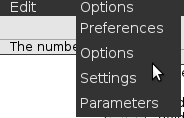
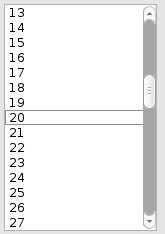
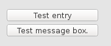
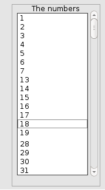
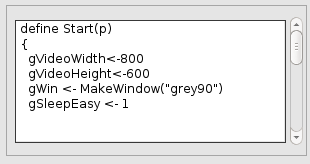
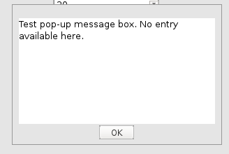
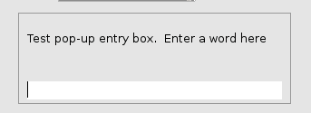
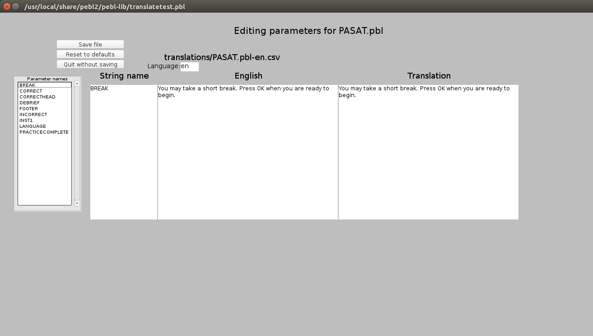

Figure 7.1: Screenshot of of PEBL Launcher.

__________________________________________________________________
The PEBL Manual
Programming and Usage Guide for
The Psychology Experiment Building Language
PEBL Version 2.1
Shane T. Mueller
__________________________________________________________________
©2003-2018 Shane T. Mueller smueller@obereed.net
shanem@mtu.edu
Current for PEBL Version 2.1 – Released 2018
http://pebl.sourceforge.net
COPYRIGHT ©2018 Shane T. Mueller. All rights reserved.
ISBN 978-0-557-65817-6
PEBL (Psychology Experiment Building Language) is a cross-platform, open-source programming language and execution environment for constructing programs to conduct a wide range of archetypal psychology experiments. It is entirely free of charge, and may be modified to suit your needs as long as you follow the terms of the GPL, under which the source code is licensed. PEBL is written primarily in C++, but requires a few other tools (flex, yacc) and the 2.0 branch of the SDL libraries (SDL, SDL_image, SDL_gfx, and SDL_ttf) to use. In addition, a set of audio recording functions are available using the (now old and basically unmaintained) sdl_audioin library. Finally, the waave library optionally supports movie playback on linux and windows.
It currently compiles and runs on Linux (using g++), Mac OSX (using xcode), and Microsoft Windows (using code:blocks and mingw) platforms using free tools. It has been developed primarily by Shane T. Mueller, Ph.D. (smueller@obereed.net). This document was prepared with editorial and formatting help from Gulab Parab and Samuele Carcagno. In addition, much of the material in the chapter on the PEBL Test battery was contributed by Bryan Rowley. Contributions are welcome and encouraged.
Most users will be able to download a precompiled version of PEBL and run experiments directly. Some advanced users may wish to compile their own version, however. The next section describes how to do this.
Currently, there is no automated compile procedure. PEBL requires the SDL2, SDL2_image, SDL2_gfx SDL2_net, SDL2_audioin and SDL2_ttf libraries and development headers. It also uses flex and bison, but you can compile without these tools. PEBL compiles on both Linux and Windows using the free gcc compiler; on windows this is most easily supported through the code:blocks IDE. Note that SDL-image may require jpeg, png, and a zlib compression library, while SDL-ttf uses truetype 2.0.
PEBL should compile by typing ‘make’ in its base directory once all requisite tools are installed and the source distribution is uncompressed. Currently, PEBL does not use autotools, so its make system is rather brittle. Assistance is welcome.
On Linux, compiling will fail if you don’t have an /obj directory and all the appropriate subdirectories (that mirror the main tree.) These will not exist if you check out from CVS.
On Microsoft Windows, PEBL is designed to be compiled using the Free IDE code:blocks. A code:blocks project file is included in the source code directory. Email the PEBL list for more details.
Originally, PEBL compiled to a command-line function. Since 0.12, PEBL will compile to a .app package using xcode. An xcode package is available in the source archive.
On Linux, there are .deb packages available for debian. However, it is fairly easy to compile and install from source. To begin, be sure that all the sdl packages are installed. Then, go to the main pebl directory and type:
Once installed, you can install the test battery into Documents/pebl-exp.X using the command pebl –install.
In Microsoft Windows, we provide an installer package that contains all necessary executable binary files and .dlls. This installer places PEBL in c:\Program Files\PEBL, and creates a directory pebl-exp.X in My Documents with a shortcut that allows PEBL to be launched and programs that reside there to be run.
For OSX, we provide a .app package that can be dragged into your Applications
folder. The first time any user runs pebl, it gives the option to install the battery and
other files into Documents
pebl-exp.X. Afterward, it will run the launcher from that directory.
The simplest way to run any PEBL script is via the launcher, which is available on all platforms. The launcher is covered in detail in Chapter 6. But, you can also launch experiments individually on each platform.
If you have installed PEBL into /usr/local/bin, you will be able to invoke PEBL by typing ‘pebl2’ at a command line. PEBL requires you to specify one or more source files that it will compile and run, e.g., the command:
will load the experiment described in stroop.pbl, and will load the supplementary library functions in library.pbl.
Additionally, PEBL can take the -v or -V command-line parameter, which allows you to pass values into the script. This is useful for entering subject numbers and condition types using an outside program like a bash script (possibly one that invokes dialog or zenity). A sample zenity script that asks for subject number and then runs a sample experiment which uses that input resides in the bin directory. The script can be edited to use fullscreen mode or change the display dimensions, for example. See Section 2.5: Command-Line Arguments.
You can also specify directories without a filename on the command-line (as long as they end with ‘/’). Doing so will add that directory to the search path when files are opened.
PEBL can be launched from the command line in Windows by going to the pebl\bin directory and typing ‘pebl.exe’. PEBL requires you to specify one or more source files that it will compile and run. For example, the command
loads the experiment described in stroop.pbl, and loads supplementary library functions in library.pbl.
Additionally, PEBL can take the -v or -V command-line parameter, which allows you to pass values in to the script. This is useful for entering condition types using an outside program like a batch file. the -s and -S allow one to specify a subject code, which gets bound to the gSubNum variable. If no value is specified, gSubNum is initialized to 0. You can also specify directories without a file (as long as they end with ‘\’). Doing so will add that directory to the search path when files are opened. See Section 2.5: Command-Line Arguments.
Launching programs from the command-line on Windows is cumbersome. One easy way to launch PEBL on Windows is to create a shortcut to the executable file and then edit the properties so that the shortcut launches PEBL with the proper script and command-line parameters. Another way is to write and launch a batch file, which is especially useful if you wish to enter configuration data before loading the script.
The latest version of PEBL packaged for OSX is 0.12. It is compiled as an application bundle with both 32-bit and 64-bit architectures available. We do not support PPC architecture.
The simplest way to run PEBL is through the launcher, but you can also use Applescript to create your own sequences of experiments.
On OSX, PEBL can be run as a command-line tool, just as in linux. Once installed, the application is located at /Applications/pebl.app/Contents/MacOS/pebl2.
In order to improve performance, PEBL runs at the highest priority possible on your
computer. This means that if it gets stuck somewhere, you may have difficulty
terminating the process. We have added an ‘abort program’ shortcut key combination
that will immediately terminate the program and report the location at which it
became stuck in your code:
press <CTRL><SHIFT><ALT><\> simultaneously.
Some aspects of PEBL’s display can be controlled via command-line arguments.
Some of these are platform specific, or their use depends on your exact hardware and
software. The following guide to command-line arguments is adapted from the output
produced by invoking PEBL with no arguments:
Usage: Invoke PEBL with the experiment script files (.pbl) and command-line
arguments.
Examples:
Invokes script and passes VALUE1 and VALUE2 (or any text immediately
following a -v) to a list in the argument of the Start() function.
This is useful for passing in conditions, subject numbers, randomization cues,
and other entities that are easier to control from outside the script. Variables
appear as strings, so numeric values need to be converted to be used as
numbers.
Binds VALUE to the global variable gSubNum, which is set by default to 0.
Sets the video driver, when there is more than one. On all platforms, opengl and software should be available. In Linux, opengles is also available, and on windows, direct3d.
Controls the screen width and height (in pixels). Defaults to the current resolution of the screen. Unlike older versions of PEBL, after 0.12 any legal combination of width and height should work.
The screensize a PEBL script runs at depends on a number of things. If no –display size is given (e.g., when ’default’ is chosen in the launcher), PEBL will try to determine the current screen size and use that, for both fullscreen and windowed mode. Otherwise, it will try to use the specified value.
However, these values are only a request. When the script starts, it sets the values of the global variables gVideoWidth and gVideoHeight based on either the specified values or the current screen size. These values can be changed in the script before the MakeWindow function is called, so that a script can require a particular screen size. Then, the window will be created with those dimensions, overriding any command-line parameters. For greatest flexibility, it is recommended that you do not hard-code screen size but rather make your test adapt to a large number of screen sizes.
Finally, if a screen size is selected that the video card cannot support (i.e., in fullscreen mode), gVideWidth and gVideoHeight will be set to the legal screen size closest to the one you requested. PEBL should never crash because you have specified the wrong screen size, but it should rather use one it can support. The values of gVideoWidth and gVideoHeight will be changed by MakeWindow to whatever screen size it actually uses.
Controls the pixel depth, which also depends on your video card. Currently, depths of 2,8,15,16,24, and 32 are allowed on the command-line. There is no guarantee that you will get the specified bit depth, and bit depths such as 2 and 8 are likely never useful. Changing depths can, for some drivers and video cards, enable better performance or possibly better video sychrony. Defaults to 32.
Allows user to specify a language code that can get tested for within a script to select proper translation. It sets a global variable gLanguage, and is “en” by default.
To help you debug what is happening and determine the system settings, information about PEBL system settings are printed out to stderr.txt. When a window is created, the following information will be printed out.
First, the available drivers will be described. All platforms should have opengl and software, along with additional platform-specific drivers.
Next, specific information about the video display and system will be printed.
PEBL has a fairly straightforward and forgiving syntax, and implements most of its interesting functionality in a large object system and function library of over 125 functions. The library includes many functions specific to creating and presenting stimuli and collecting responses. Efforts, however successful, have been made to enable timing accuracy at a millisecond-scale, and to make machine limitations easy to deal with.
Each PEBL program is stored in a text file. Currently, no special authoring environment is available. A program consists of one or more functions, and must have a function called Start(). Functions are defined with the following syntax:
The parameter list and the return value are optional. For the Start(par){} function, par is normally bound to 0. However, if PEBL is invoked with -v command-line parameters, each value that follows a -v is added to a list contained in ‘par’, which can then be accessed within the program:
A simple PEBL program that actually runs follows:
Print() is a standard library function. If you run PEBL from a command-line, the text inside the Print function will be sent to the console. On Windows, it will appear in the file ‘stdout.txt’ in the PEBL directory. Although other functions do not need a parameter argument, the Start() function does (case values are passed in from the command-line).
A number of sample PEBL programs can be found in the /demo subdirectory.
PEBL uses case to specify an item’s token type. This serves as an extra contextual cue to the programmer, so that the program reads more easily and communicates more clearly.
Function names must start with an uppercase letter, but are otherwise case-insensitive. Thus, if you name a function "DoTrial", you can call it later as "DOTRIAL" or "Dotrial" or even "DotRail". We recommend consistency, as it helps manage larger programs more easily.
Unlike function names, variable names must start with an lowercase letter; if this letter is a ‘g’, the variable is global. This enforces a consistent and readable style. After the first character, variable names are caseinsensitive. Thus, the variable ‘mytrial’ is the same as ‘myTrial’.
Currently, syntax keywords (like loop, if, define, etc.) must be lowercase, for technical reasons. We hope to eliminate this limitation in the future.
PEBL has a simple and forgiving syntax, reminiscent of S+ (or R) and c. However, differences do exist.
Table 3.1 shows a number of keywords and symbols used in PEBL. These need not appear in lowercase in your program.
| Symbol/Keyword | Usage |
| + | Adds two expressions together |
| - | Subtracts one expression from another |
| / | Divides one expression by another |
| * | Multiplies two expressions together |
| ^ | Raises one expression to the power of another |
| ; | Finishes a statement, or starts a new statement |
| on the same line (is not needed at end of line) | |
| . | The property accessor. Allows properties to be accessed by name |
| : | Used to specify a default value in a function definition, and to access global function definition. |
| <- | The assignment operator |
| ( ) | Groups mathematical operations |
| { } | Groups a series of statements |
| [ ] | Creates a list |
| # | Comment—ignore everything on the line that follows |
| < | Less than |
| > | Greater than |
| <= | Less than or equal to |
| >= | Greater than or equal to |
| == | Equal to |
| <> != ~= | Not equal to |
| and | Logical and |
| break | Breaks out of a loop prematurely |
| not | Logical not |
| or | Logical or |
| while | Traditional while loop |
| loop | Loops over elements in a list |
| if | Simple conditional test |
| if...else | Complex conditional test |
| if...elseif...else | Extended conditional chain |
| define | Defines a function |
| return | Allows a function to return a value |
Note that the ‘=’ symbol does not exist in PEBL. Unlike other languages, PEBL does not use it as an assignment operator. Instead, it uses ‘<-’. Because it is confusing for users to keep track of the various uses of the = and == symbols, we’ve eliminated the ‘=’ symbol entirely. Programmers familiar with c will notice a resemblance between PEBL and c. Unlike c, in PEBL a semicolon is not necessary to finish a statement. A carriage return indicates a statement is complete, if the current line forms a complete expression. You may terminate every command with a ‘;’ if you choose, but it may slow down parsing and execution.
Another difference between c and PEBL is that in PEBL, {} brackets are not optional: they are required to define code blocks, such as those found in if and while statements and loops.
An expression is a set of operations that produces a result. In PEBL, every function is an expression, as is any single number. Expressions include:
Notice that "String " 33+ is a legal expresison. It will produce another string: "String 33".
These are not expressions:
NSUHO is not a variable because it starts with a capital letter. The other lines are incomplete expressions. If the PEBL parser comes to the end of a line with an incomplete expression, it will automatically go to the next line:
This can result in bugs that are hard to diagnose:
sets a to the string "3561331".
But if a carriage return occurs at a point where the line does make a valid expression, it will treat that line as a complete statement:
sets a equal to 356, but creates a syntax error on the next line.
Any expression can be used as the argument of a function, but a function may not successfully operate when given bogus arguments.
If a string is defined across line breaks, the string definition will contain a linebreak character, which will get printed in output text files and textboxes.
If you desire a long body of text without linebreaks, you must define it piecemeal:
The main way of iterating in PEBL is via the loop syntax. ASome examples include:
The loop function will execute the code in the brackets multiple times; once for each element of the list specified as the second argument. On each iteration, the variable named in the first argument will be bound to a different value. As of 2.0, the if the second argument is an integer, loop will automatically create a list and iterate over the values 1...N up to the specified number. So, the following two are identical:
In the future, the second version may be altered to be faster or use less memory.
PEBL can store the results of expressions in named variables. Unlike many programming languages, PEBL only has one type of variable: a “Variant”. This variable type can hold strings, integers, floating-point numbers, lists, graphical objects, and everything else PEBL uses to create an experiment. Unlike other languages, a variable need not be declared before it can be used. If you try to access a variable that has not yet been declared, PEBL will return a fatal error that stipulates as such.
Variants just hide the representational structure from the user. An actual string resides within the variant that holds a string. A long integer resides within the variant that holds an integer.
PEBL Variants are automatically coerced or cast to the most appropriate inner format. For example, 3232.2 + 33 starts out as a floating point and an integer. The sum is cast to a floating point number. Similarly, "banana" + 33 starts as a string and an integer, but the combination is a string.
All variables must begin with a lowercase letter. Any sequence of numbers or letters may follow that letter. If the variable begins with a lowercase ‘g’, it has global scope; otherwise it has local scope.
As described above, variables can have either local or global scope. Any variable with global scope is accessible from within any function in your program. A variable with local scope is accessible only from within its own function. Different functions can have local variables with the same name. Generally, it is a good idea to use local variables whenever possible, but using global variables for graphical objects and other complex data types can be intuitive.
Variables may contain various types of data, such as simple types like integers, floating-point ratio numbers, strings; and complex types like lists, windows, sounds, fonts, etc. A variable can be set to a new value, but by design, there are very few ways in which a complex object can be changed once it has been set. For example:
Notice that woof and dog refer to the same sound object. Now you may:
which will stop the sound from playing. If instead you:
woof will play until it is complete or the program ends.
Images provide another example. Suppose you create and add an image to a window:
Now, suppose you create another variable and assign its value to mImage:
Even though mImage2 was never added to mWindow, mImage has moved: different variables now point to the same object. Note that this does not happen for simple (non-object) data types:
This produces the output:
This may seem confusing at first, but the consistency pays off in time. The ‘<-’ assignment operator never changes the value of the data attached to a variable, it just changes what the variable points to. PEBL is functional in its handling of simple data types, so you can’t, for example, directly modify the contents of a string.
The discussion in 3.6.4 on copying has implications for passing variables into functions. When a variable is passed into a function, PEBL makes a copy of that variable on which to operate. But, as discussed in 3.6.4, if the variable holds a complex data type (object or a list), the primary data structure allows for direct modification. This is practical: if you pass a window into a function, you do not want to make a copy of that window on which to operate. If the value is a string or a number, a copy of that value is made and passed into the function.
The true power of PEBL lies in its extensive library of functions that allow specific experiment-related tasks to be accomplished easily. For the sake of convenience, the library is divided into a number of subordinate libraries. This library structure is transparent to the user, who does not need to know where a function resides in order to use it. Chapter 5 includes a quick reference to functions; Chapter 10 includes a complete alphabetical reference.
To create your own function, you use the define keyword, followed by the (Uppercase) function name, the arguments, and the code delineated by brackets. Within a function, the passed-in arguments and any new parameters will have a scope local to that function. Any variables starting with a ’g’ value will have global scope, and be available outside the function.
Version 2.0 introduces two important new features to functions: optional/default arguments and global-namespace functions.
When you define a function, you can specify a default value by following the variable name with a colon and the default value.
When calling a function, it must be called with all its non-optional arguments, but if an optional argument is not given, it will take on the default value. Currently, if you cannot specify non-default values for arguments that occur after the first default value you use, so in the above situation, you can call FunctionName(1), Function(1,1,1), or FunctionName(1,1,1), but you can’t skip the second argument.
PEBL has two types of functions: built-in functions written in C++, and a library of functiosn written in PEBL (located in the pebl-lib directory of the PEBL directory). For all functions, if you define a function with a name identical to an already-defined function, it will use your newly-defined function instead of the original. However, if the original was a compiled function, you can still access that function by pre-pending the name with a colon.
This is useful if you want to rename a function for debugging or other purposes, but still want to access the original. For example, supposed I wanted to log the time of each Draw() function, I could redefine Draw:
We use this in the Debug.pbl directory, which opens up a debugging window and prints to the window.
The previous sections provide everything you need to know to write a simple program. Here is an annotated program:
More sample programs can be found in the demo/ and experiments/ directories of the PEBL source tree.
In PEBL, complex objects are stored and automatically self-managed. These objects include lists, graphical display widgets like images and text displays, fonts, colors, audio files, and input or output files. Objects are created and modified with special functions, but many of their properties available directly for access and modification with a variable.property syntax. For example, the position of a textbox is controlled by .X and .Y properties, and can also be changed with the Move() function. To move the label lab, which is located at 100,100, to 150,100, you can either do Move(lab,150,100) or lab.X <- 150. The available properties and accessor function are listed in the decriptions of their relevant objects below.
Lists are incredibly useful and flexible storage structures that play an important role in PEBL. A list is simply a series of variables. It is the equivalent to a vector, array, or other similar data structure in many other programming languages.
Creating and accessing elements of lists can be accomplished in a number of ways. If you have a set of values you want to create a list from, you simply need to put them inside square brackets, separated by commas:
Many functions related to experimental design return lists already created. Two simple functions are Repeat and Sequence:
Accessing list items can be done in a number of ways. The simplest is using the Nth() function. For a slightly more complex example, suppose you want to print out every item in a list. Looping through, accessing, and printing all the items of a list using this approach:
Note that prior to PEBL 0.12, using Nth to access list items was inefficient. Since PEBL 0.13, you can use Nth to access list items in amortized constant time! But nevertheless, the above method of looping is verbose and error-prone. There is an alternative. Items from lists can be iterated over using the ‘loop’ command:
These two code blocks produce identical output, but in the former block, each item of the list must be found on each iteration, but in the latter block, a list item is bound directly to ‘item’ on each iteration. There is no appreciable difference in the efficiency of these two methods, but the second is simpler and in many cases easier to use, and avoids some errors (like forgetting to increment i).
Oftentimes, you want to create a list one element at a time. For example, you may have a sampling scheme for stimuli and need to pick each consecutive randomly, or you want to record response times or accuracies one trial at a time. There are two ways you can do this. If you know how long your list will be, you can create a list with as many elements as you need, and then alter each element one at a time.
Oftentimes, however, this is difficult because you do no know how long the list should be at the beginning. The Append() function is able to add an item to the end of a list, and you can use that to ’grow’ a list one item at a time:
This ideom is used in many places in PEBL test batteries. However, it can be inefficient as the length of the list grows. This is because on each iteration, a new list is created that is 1 element longer than the previous list (and each element is copied to the new list). For small lists, even ones hundred of items long, this overhead is pretty small and you hardly notice. But as a list gets thousands of items long, this can start to slow things down, especially if you are doing something complex between each trial. As of PEBL 0.13, we support another function called PushOnEnd():
PushOnEnd will alter items directly, and do so in a very efficient way. Notice that you don’t need to copy the new list and overwrite itself. However, for ease of use, PushOnEnd() returns the current copy of the list, and so you can often use it as a drop-in replacement for Append (in cases where you are throwing away the original list). In tests, this method appears to be only 5-10% less efficient than using PushOnEnd alone, and so it should hardly be noticed.
A caveat when using lists: Some functions operate on lists to produce new lists (sub-lists, re-ordered lists, etc.). When the lists contain simple data types (numbers, strings, etc.), entirely new data structures are created. But when the data structures are complex (windows, sounds, images, etc.), the objects are not copied. Only new pointers to the original objects are created. So if you change the original object, you may end up accidentally changing the new object. Although that is relatively difficult, because PEBL allows only limited modification of existing data structures, it is still possible. This is a special case of the copy/assignment issue discussed in Section 3.6.4: Copies and Assignment.
Many mathematical functions that take a single argument can be applied either to a number or a list of numbers. When applied to an entire list, it will return the function applied to each element of that list. For example, Ln(1) return 0, but Ln([1,1,1] returns [0,0,0].
A list of functions that support this include:
| • Log10 | • Log2 | • Ln | • Exp |
| • Sqrt | • Tan | • Sin | • Cos |
| • ATan | • ASin | • ACos | • DegToRad |
| • RadToDeg | • Round | • Floor | • Ceiling |
| • AbsFloor | • Sign | • Abs | |
In addition, a number of math functions that take two argumunts will apply themselves recursively to the first argument should it be a list. For example, LogN([1,1,1],5) will return [0,0,0]. Functions that support this include:
| • LogN | • Pow | • NthRoot |
PEBL uses truetype fonts for the display of text in labels and other text widgets. In addition to the filename, font objects have the following properties: style (i.e., normal, bold, italic, underline), size (in points), foreground color, background color, and whether it should be rendered anti-aliased.
We distribute a series of high-quality freely available and redistributable fonts, including the DejaVu series, freefont series, and a few others. These include the typeface/files shown below 4.1:
| Filename | Description |
| FreeFont Fonts | |
| FreeSans.ttf | Simple Clean sans seriffont |
| FreeSansBold.ttf | |
| FreeSansOblique.ttf | |
| FreeSansBoldOblique.ttf | |
| FreeMono.ttf | Courier-like fontface |
| FreeMonoBold.ttf | |
| FreeMonoOblique.ttf | |
| FreeMonoBoldOblique.ttf | |
| FreeSerif.ttf | Similar to Times New Roman |
| FreeSerifBold.ttf | |
| FreeSerifItalic.ttf | |
| FreeSerifBoldItalic.ttf | |
| Fontforge Fonts
| |
| Caliban.ttf | Helvetica-style |
| CaslonRoman.ttf | Quirky Roman Font series |
| CaslonBold.ttf | |
| CaslonItalic.ttf | |
| Caslon-Black.ttf | |
| Humanistic.ttf | Sharp, refined fontface |
| SIL Fonts | |
| DoulosSILR.ttf | Comprehensive font with roman and cyrillic glyphs |
| GenR102.ttf | Includes many latin alphabet letters |
| GenI102.ttf | |
| CharisSILR.ttf | Like doulos, optimized for printing |
| CharisSILB.ttf | |
| CharisSILI.ttf | |
| CharisSILBI.ttf | |
| PEBL Fonts
| |
| Stimulasia.ttf | A small set of arrow/boxes |
| Bitstream Vera Series (Deprecated in favor of DejaVu)
| |
| Vera.ttf | Sans serif Roman-style base font |
| VeraMono.ttf | Sans serif Roman-style mono-spaced base font |
| VeraSe.ttf | Serif Roman-style base font (similar to times) |
| VeraBd.ttf | Bold Vera |
| VeraIt.ttf | Italic Vera |
| VeraBI.ttf | Bold Italic Vera |
| VeraMoBd.ttf | Bold Vera Mono |
| VeraMoIt.ttf | Italic Vera Mono |
| VeraMoBI.ttf | Bold Italic Vera Mono |
| VeraSeBd.ttf | Bold Serif Vera |
| DejaVu Series (Version of Vera with international characters)
| |
| DejaVuSerif.ttf | Serif Roman-style base font (similar to times) |
| DejaVuSans.ttf | Serif Roman-style base font |
| DejaVuSansMono.ttf | Sans serif Roman-style mono-spaced base font |
| CJK Fonts
| |
| wqy-zenhei.ttc | All-purpose font with support for Chinese, Korean and Japanese |
These should always be available for use in experiments. The fonts.pbl script in the demo/ directory will display what symbols from each of these fonts looks like.
To use, you need only specify the font name in the MakeFont() function:
This code makes a red 22-point anti-aliased font on a grey background. Other fonts may be used by specifying their absolute pathname or copying them to the working directory and using them.
Accessible font properties:
Having the right fonts is important for translating PEBL scripts into new languages. Previously, this was challenging because the default font used in many scripts was Vera, and Vera has poor support for international characters. As of PEBL 0.11, a few things have changed to make international character support easier:
So now, many international characters will be handled by default. For character sets that aren’t handled by DejaVu, simply needs to change gPEBLBaseFont to name a font that can handle your characters (and include that font in the program directory), and everything should work out fine.
Colors are PEBL objects. A color can be created by specifying its name using the MakeColor() function, or by specifying its RGB values using the MakeColorRGB() function. A list of colors and their respective RGB values can be found in the Colors.txt file in the documentation directory, or in the final chapter of the manual. There are nearly 800 from which to choose, so you can create just about anything you can imagine.
Accessible color properties:
To run an experiment, you usually need to create a window in which to display stimuli. This is done with the MakeWindow() function. MakeWindow() will create a grey window by default, or you can specify a color. Currently, an experiment can have only one window.
Graphical “widgets” are the building blocks of experimental stimuli. Currently, four widgets are available: images, labels, canvasses, and textboxes. More complicated widgets are in progress or planned. There are also a number of shapes that in some ways behave like widgets, but are technically not.
To be used, a widget must be created and added to a parent window, and then the parent window must be drawn. You can hide widgets with the Hide() function, and show them with the Show() function; however, this affects only the visibility of the widget: it is still present and consuming memory. Widgets can be moved around on the parent window using the Move() function. Move() moves the center of an image or label to the specified pixel, counting from the upper-left corner of the screen. Move() moves the upper left-hand corner of textboxes. For the sake of convenience, the MoveCorner function is available, which will move an image or label by its upper left-hand corner.
You should remove widgets from their parent window when you are finished using them.
All widgets have several properties available for controlling their behavior.
PEBL can read numerous image types, courtesy of the SDL_image library. Use the MakeImage() function to read an image into an image object. As images are often used as stimuli, Move() centers the image on the specified point. To move by the upper-left hand corner, use the PEBL-defined MoveCorner() function:
Images have all the properties available for widgets, but the width and height can only be read, and not set. Width and height are controlled by the dimensions of the image file.
A canvas is a blank rectangle, sort of like an ’imageless’ image. As with an image, Move() centers the image on the specified point. A canvas appears similar to a Rectangle() shape, but differs in some important ways. First, a Canvas has a piece of video memory associated with it–shapes do not. This means that other objects can be added to a canvas, just as it can be added to a window. If you move the canvas around, the attached objects will move with the canvas.
Second, individual pixels of a canvas can be set, using the SetPoint() function. SetPoint works on images too, but not on text. This is because a Draw() command re-renders text, and so will wipe out any pixel damage you have done. This can be useful for making special-purpose drawing functions to create stimuli, especially noise distributions.
Finally, a canvas can be drawn on with another object. In fact, you can you another image as a brush. Add an image to a canvas, and anytime you call Draw() on the canvas (rather than without an argument), the image gets imprinted on the canvas. This will remain until you call ResetCanvas().
For example:
The draw-on trick can be used to add noise to a text stimulus. Make a label and add it to a canvas, use Draw() on the label, then hide the label, and add noise to the canvas by using SetPoint(). Anything drawn on the canvas won’t get reset until the ResetCanvas() function is called.
Images have all the properties available for widgets. Size cannot be updated once the canvas is created.
Note that the background color can have an alpha value. If you use an alpha value of 0, the background will be invisible.
PEBL allows you to define a number of shape objects that can be added to another widget. A demonstration script exercising these shapes is found in demo/shapes.pbl.
The following is a list of shape and their properties.
Description: A standard circle. Move commands move the center of the circle to the
specified location.
Command: Circle(<x>,<y>,<r>,<color>,<filled>)
Properties: .name
.filled = 0,1 (whether it is filled)
.color (color)
.x (x position of center)
.y (y position of center)
.height (read-only height)
.width (read-only width)
.R (radius)
Description: An ellipse, with height and width differing. Cannot be pointed in an arbitrary direction. Move commands move the center of the shape to the specified location.
Command: Ellipse(<x>,<y>,<rx>,<ry>,<color>,<filled>)
Properties: .name
.filled = 0,1 (whether it is filled)
.color (color)
.x (x position of center)
.y (y position of center)
.height (read-only height)
.width (read-only width)
.rx (x radius)
.ry (y radius
Description: A square. Move commands move the center of the shape to the specified location.
Command: Square(<x>,<y>,<size>,<color>,<filled>)
Properties:
.name
.filled = 0,1 (whether it is filled)
.color (color)
.x (x position of center)
.y (y position of center)
.height (read-only height)
.width (read-only width)
.dx, .dy, .size (Length of side)
Description: A Rectangle. Move commands move the center of the rectangle to the specified location.
Command: Rectangle(<x>,<y>,<dx>,<dy>,<color>,<filled>)
Properties: .name
.filled = 0,1 (whether it is filled)
.color (color)
.x (x position of center)
.y (y position of center)
.height (read-only height)
.width (read-only width)
.dx, (width) .dy, (height)
Description: A Line. Move commands move the center of the line to the specified location.
Command: Line( <x>, <y>,<dx>,<dy>,<color>)
Properties: .color (color)
.x (x position of start)
.y (y position of start)
.width, (x length)
.height, (y length)
Description: An arbitrary polygon.
Command: Polygon( <x>, <y>,<xpoints>,<ypoints>,<color>,<filled>)
Properties: .name
.color (color)
.x (x position of start)
.y (y position of start)
Description: An arbitrary bezier curve.
Command: Bezier( <x>, <y>,<xpoints>,<ypoints>,<steps>,<color>)
Properties: .name
.color (color)
.x (x position of start)
.y (y position of start)
You can create a text label object with the MakeLabel() function, which requires specifying a font, and the foreground and background colors. Labels are only a single line of text. Like images, when you move them, they center on the specified point.
The text inside a label can be extracted with GetText() and set with SetText(). When you change a text object, it will not appear until the next time you call a Draw() function.
Text labels have all the regular widget properties, plus:
The .HEIGHT and .WIDTH accessible, but cannot be changed because they are controlled by the text and the font size.
A text box is a graphical widget that contains a body of text. Text automatically wraps when it is too long to fit on a single line. Like labels, the text inside a TextBox can be extracted with GetText() and set with SetText(). When a text object is changed, it rerenders immediately, but does not appear until the next time a Draw() function is called.
Textbox properties:
Text box editing can be performed using the GetInput(<textbox>,<escape-key>) function. This returns the text that is present in the box when the participant hits the key associated with <escape-key>. <escape-key> is just a text-based code that describes the keypress that should be checked for exit. Typical escape-key options include:
See the Keyboard Entry section below for a more complete list.
Translation from string to keyboard input is still crude, and is handled in src/utility/PEBLUtility.cpp:TranslateString
Currently, audio output is supported through a software mixer library, although there are no facilities for recording or analyzing audio input.
PEBL can load both raw and compressed audio filen, including .wav, .mp3, .ogg, .flac, and .midi files, which are handled seamlessly with the LoadSound() function. This returns an audio stream object that can be played with either the PlayForeground() or PlayBackground() functions. The PlayForeground() function returns once the sound is finished playing; PlayBackground() returns immediately and the sound plays in a separate thread. When using PlayBackground, playing can be stopped using the Stop() function.
The volume of an audio sample can be manipulated using SetPanning. Here, each channel (left and right) volume is set independently, from 0 to 1.0. Also, the SetPlayRepeats will repeat playback a sound until stopped. This could be good for a signal that is played until a response is made.
As of 2.0, Playback of movies is not enabled.
If compiled to support them, PEBL can read numerous video and audio media files waave library and ffmpeg. Use the LoadMovie() function to read a movie file into a movie object. The Move() function moves the upper left corner of the movie to the specified point. An audio file can be similarly loaded using the LoadAudioFile function.
Movie playback is done via a handler placed in the event loop. This handler is placed there with the StartPlayback function. Then, when the event loop runs, the movie will get updated in proper time sequence. The event loop is used for most WaitFor type events. This allows you to play a movie and wait for a response at the same time. Alternately, a complete movie file can be played in full (with no possibility for stopping early) using the PlayMovie() function.
Movies have a number of properties that can be set to change playback or determine aspects of the movie. These are all accessible via .property syntax, and can be printed by the PrintProperties function. Properties include:
Along with the built-in objects, PEBL lets you create your own object with properties that can be added, changed, and accessed using the .property notation. With appropriate use of the CallFunction command, you can also specify function handlers for functions such as Move(), Draw(), Inside(), or whatever you want. The object system in PEBL is fairly (and intentionally) primitive, without things you might expect from full-fledged object-oriented languages (i.e., accessor functions, inheritance, methods, constructors, etc.). Nevertheless, it can be very useful for encapsulating a lot of information about a computing object, and is used heavily in the GUI objects found in the launcher and other PEBL tools.
Use MakeCustomObject(name) to create a custom object. Then, a property can be added by assigning obj.name. For example, suppose you want an object to represent the x,y location of a point.
Now, if you want to use access the x and y properties, do:
An object can take a function name as a property. For example:
With the function InsidePoint defined as:
If you had a bunch of objects, you could define the .inside property of each differently. Then, later, you could define InsideObject to check any of them:
PEBL can examine the state of the keyboard, and wait for various keyboard events to happen. Functions such as WaitForKeyDown(), WaitForAnyKeyDown(), etc., allow you to collect responses from subjects. Most keys are specified by their letter name; others have special names:
Also, the traditional "modifier" keys can serve as normal keys:
PEBL supports input with a joystick. In order to use a joystick, you first need to poll the computer to determine whether a joystick is attached, and create a joystick object. The file joysticktest.pbl in the demo directory creates a simple visual depiction of a fairly standard gamepad.
A joystick will have up to four types of inputs on it: buttons, axes, hats, and balls. But different joysticks are different, and so you may need to do some checking and testing for your particular setup. PEBL currently does not support force-feedback or rumble functions available on some joysticks.
Each axis takes on a value between 1 and 32768. For a normal hand-grasp joystick , the first two axis will be determined by the relative x and y positions of the joystick. Gamepads often have triggers that are additional axis, or sometimes there are throttles (or gas/brake pedals in driving devices) that are mapped to axes. Find out how many axes exist with GetNumJoystickAxes(). Get the state of a particula axis with GetJoystickAxisState().
Hats are the little 8-way buttons that control direction on many game pads. They are sort of a digital axis, because each state is absolute. The entire hat state takes on a single integer number between 0 and 15. It is binary coded to specify whether each of the four major axes buttons are depressed:
The mechanics of the hat allows two buttons to be pressed simultaneously, indicating, for example, southeast or northwest. An example of how to extract the bitwise button states is found in the joysticktest.pbl file.
Usually, the state of each of the buttons on the joystick can be identified. Button state is coded so that 0=unpressed, 1=pressed. There can easily be a dozen or more buttons on a joystick, enabling some pretty elaborate response modes for experiments.
Balls are very rare; you may have seen them in old-style arcade games like Arkenoid. No consumer joysticks available today appear to have balls that operate this way, and they have not been tested in PEBL. If you want to support trackballs, there are plenty of trackball mice that work as normal joystick controllers.
A number of functions are available for creating a joystick object and polling the joystick’s current state:
Summary of joystick functions:
Currently, the joystick state is not integrated into PEBL’s event loop. Consequently, there are no functions such as WaitForJoystickButton(), and no way to create or monitor events. To use the joystick, you need to monitor the state of the device manually, and create a polling loop yourself, like:
The file demo/joysticktest.pbl uses most of the available joystick functions to display a virtual gamepad on the screen as it captures input.
Files are objects that can be read from or written to using several PEBL functions. To use a file object, create one using one of the functions listed below. Each function returns a file object:
For example, you can use the command:
myfile <- FileOpenRead("stimuli.txt")
to create ‘myfile’, a readable file stream.
FileOpenWrite is made with a safety backup. It will never overwrite an existing file; instead it will create a new file name by appending a number (i.e. 1) to the end of the base file name. The new filename will be saved as in the .filename property of the resulting file. The function FileOpenOverwrite() will overwite any existing files, and should not be used for data files when you have the chance for a collision in a subject code.
The function GetNewDataFile() offers another all-in-one path for creating a data file. It will take a base name and a subject identifier, a file extension, and a header. If the file has not previously been created, it will create the new file and add a header row. If it has been created before, it will ask you whether to append to the current data file (in which case it won’t add a header row), or select a new data file. Data files are created in separated subdirectories (one per participant) within the data directory of the experiment.
Because some of the FileOpen commands will create a file with a name you didn’t ask for (to avoid overwriting), a successfully opened file has a property .filename that provides the actual file name selected.
Other Functions described below allow filestreams to be written to or read from. When you are finished, you can close a filestream Using the ‘FileClose()’ function.
A number of related functions have been created to help make reading and writing to files easier. For example, the following functions enable reading an entire file into either a string variant, a list (with one list item per row), or a table:
PEBL has limited ability to open and communicate via TCP/IP connections, either some other system (e.g., for synchronizing with an e.e.g. or eyetracking computer), or another computer running PEBL (e.g., to create multi-subject game theory experiments or to have an experimenter controlling the task from another computer.)
TCP/IP is a protocol by which computers can talk to one another. It is fairly barebones, and PEBL tries to hide much of its complexity. The information you send from one computer to another is guaranteed to arrive in the correct order, at the potential cost of serious delays, especially if the computers are on different networks or in different locations. Furthermore, connecting PEBL to another computer in this way is a potential security risk. However, the ability to transfer information between computers opens up huge potential for the types of experiments that can be constructed.
To do this, you first must open a network object to communicate with another computer. To do this, you must know (1) the IP number (like 127.0.0.1) or hostname (like myname.myschool.edu) of the computer you want to connect to, and (2) the port you want to connect on. You can even use the protocol to connect to another program running on your own computer, by specifying an IP address of 127.0.0.1, or the hostname “localhost”. A port is a number–usually 2 to 5 digits, specifying a type of service on your computer. Many ports are frequently used for specific types of communication, but you can use any port you wish to communicate, as long as both computers know this port. Most ports on your computer should be blocked by default, so you may need to turn off your firewall or allow your chosen port to pass through the security or you may have trouble communicating.
To allow two PEBL programs to communicate, you need to decide that one computer
is the “server” and the other is the “client”. On the server, you execute the
function WaitForNetworkConnection(port), which listens on the specified port
until the client tries to connect. After the server is started, the client calls
ConnectToHost(hostname, port) or AcceptNetworkConnection(port)
ConnectToIP(ipnum, port), depending upon whether you are using the hostname
or ip address. Typically, ip numbers are specified by four three-digit numbers
separated by dots, like 196.168.0.1. This actually represents a 4-byte integer, and this
4-byte integer is what ConnectToIP() expects. To create that integer, use the
function
ConvertIPString(ipnum), which accepts an IP address specified in a string. So, you
can use:
net <- ConnectToIP(ConvertIPString( "127.0.0.1"), 1234)
to create a connection to another program listening on port 1234 on your own
computer. These functions all return a network object (e.g., net) that must be used
in later communication.
Once connected, the distinction between client and server essentially disappears.
However, to communicate, one computer must send data with the SendData(net,
data), and the other must receive the data, using the
GetData(net, size) function. PEBL can only send text strings, and you
must know the length of the message you want to receive. More complex
communication can be done by creating a set of PEBL functions that encapsulate
messages into text strings with templated headers that specify the message
length. Then, to receive a message, you first read the fixed-length header,
determine how much more data needs to be read, then read in the rest of the
data.
If you are using a network connection to synchronize timing of two computers, you
probably want to close the network connection with
CloseNetworkConnection(net) after you have synchronized, to avoid any extra
overhead.
A simple example of an experiment that uses TCP/IP to communicate is the NIM game in demo/nim.pbl.
Starting with Version 0.12, PEBL can send and receive information via a standard parallel (printer) port. These don’t appear on many computers anymore, but you can still get them, and they are still important ways to interface with hardware devices such as EEG and MRI machines and homebrew button boxes. Currently, parallel port access is fairly limited to setting and getting the state of the 8 data bits. Parallel ports have a number of bits you can play with, but currently PEBL only supports the basic 8 data bits. Basically, you can set the state of the bits or read the state of the bits, which can either control things like LEDs, or be impacted by making connections between the ground and the data bit.
If you have a parallel port, it is mapped to one of three ports: LPT1, LPT2, or LPTX. To initialize access to a port, you must call OpenPPort with the name of your port: "
Parallel ports have two modes, input and output. To read data in, it needs to be in input mode; to change the state of the bits, it needs to be in output mode. Set the state with SetPPortMode(port,"<input>") or SetPPortMode(port,"<output>").
To access the state of a port, use GetPPortState(port). It will return a string of "|" separated 1s and 0s, which specify the state of each of the 8 bits.
To set the state of the port, use SetPPortState(port,state). state should be a list of 8 0s or 1s:
SetPPortState(port, [0,0,0,0,0,0,0,1])
The internal c++ parallel port classes have substantially more flexibility, and can be adapted to do more complex access of parallel ports.
A number of devices are supported via the comport (serial port) library. This can include newer USB devices that simulate a comport.
The following functions are relevant:
The general process is to use OpenComPort to create the port, and then send and receive text strings from that port. These are sent one byte at a time. The mode argument is a 3-character string that specifies aspects of the mode (see Teunis van Beelen’s rs232 library at http://www.teuniz.net/RS-232/. The first character is the data bits (5,6,7 or 8), parity (n=none, e=even, o=odd), and the third is the stop bit (1 or 2 bits).
Within the demo directory, there is some basic code for communicating with the cedrus response box that uses these functions. In addition, that script provide a NumToASCII() function that can be useful in translating numbers to strings to communicate with a device.
To assist in testing for multiple input events simultaneously, PEBL implements an event loop that will quickly scan multiple conditions and execute proper results whenever any one condition is met.
The event loop works by maintaining a list of triggers that can be satisfied by various conditions. The conditions typically specify a device or other data source to examine, such as the timer. On each cycle of the loop, all events are examined, and when any of them are satisfied, either a specified function will be executed, or the event loop will exit. Most of the timing and input functions use the event loop behind the scenes.
As of Version 0.12, simple means to program the event loop are available. Three functions include:
Note that because other functions, such as Wait(), use the event loop, you can pre-load extra events and start the event loop with one of these functions.
These are used in a number of test battery tasks. However, their use is currently somewhat experimental, and their names and arguments may change in the future, and so we will not provide a detailed description of their use here.
PEBL offers an interface to set a large set of experimental parameters from a text file. Furthermore, the PEBL launcher allows you to edit and save new parameter sets. This allows you to create common versions of a test that you call, without editing the PEBL script.
The PEBL parameter system is based on a custom object created with the CreateParameters() function. To use this, it requires you to set default parameters (in case the parameter file is not found or damaged). Create default parameters as a nested list containing property-value pairs. For example:
If you want to override these values, create a text file (typically saved in the params folder with the extension .par) that contains comma-separated values parname,value, like this:
Then, create a parameter object using CreateParameters:
Any values in the .par file will override the values in the default list. PEBL tries to convert text values to numbers, and the value will be a number whenever the round-trip from text-to-number-to-text does not change the original value. Thus, avoid using floating-point values for parameters, and you may need to write “0.1” instead of “.1” if you do.
The PEBL launcher offers a way to set parameters. To do so, it needs more information, including the default values and a description. It looks for a .schema file in the params folder with the same name as the experiment. This file uses the | character to separate field (this allows you to use commas in the description):
Notice that quotes are not used in these files. The values in this file are ONLY relevant to the PEBL launcher. These are used to reset the values in a .par file or tell the experiment what typical values are. They can differ from the default values in the .pbl file, but for clarity they should not.
PEBL does a great deal of error-checking to ensure that your program will run. If you crash with a segmentation fault, this is an error and you should report it. When a fatal error or non-fatal warning occurs, PEBL attempts to identify the location in your input file that led to the warning. On Linux, the warning and this location are printed to the command-line upon exit; on MS Windows or if you are using the launcher on any platform, they are printed to the file stderr.txt. In addition, when a fatal error is signalled, a dialog box will appear that displays the main message, after which PEBL will shut down.
You can do error checking in your own scripts with the SignalFatalError() function. This is especially useful in combination with the functions testing the type of object passed into the function. To ensure proper processing and ease of debugging, test the format of an argument passed into a function:
Sometimes, you want to exit a program at a specific point, but don’t want the error message dialog box to appear. You can use the ExitQuietly(<message>) function to do this.
Numerous functions and objects open files on your computer to read in information such as graphics, sounds, fonts, program files, and text files. When you attempt to open a file, PEBL will search in a number of places, in this order:
You can also specify other paths to be searched by specifying them on the command line. Be sure to end the directory with whatever is appropriate for your platform, e.g. ‘\’ on Microsoft Windows or ‘/’ on Linux.
On OSX, as of version 0.12, the media/ directory is located within the Resources/ subdirectory of the application package.
As part of PEBL 2.0, PEBL now uses hardware-accelerated graphics subsystems that permit better and more accurate control of the video system. For the most part, this should operate transparently, but the aspects of the video system can be controlled both by command-line arguments and can be overridden within a script using special global variables. The launcher works by using command-line arguments, but these can always be overridden within a script. For the most part, these global variables must be set before a MakeWindow() function is called. The video system has several distinct aspects:
By default, the window will open up the same size as the current window. However, you can specify a specific resolution using the pulldown menu of the launcher, which also allows you to specify a custom screen size. This is most useful if you are debugging or running on a multi-screen setup. Regardless of what the specified screen resolution specified in the launcher, the selected screen resolution will be specified using the gVideoWidth and gVideoHeight global parameters, stores the specified values in pixels.
When you are testing a script, you usually want it run in a window so you can more easily cancel the script or edit parameter values. When testing, you usually want to run in fullscreen mode because it will help prevent participants from trying to do other things on the computer. This is controlled with the –fullscreen and –windowed command line parameters, which is settable using the fullscreen checkbox in the launcher.
Depending on the platform, different graphics drivers may be available. The launcher tries to determine the available drivers and gives options of these in a drivers pulldown menu. These will typically include opengl and software. On windows, a direct3d option should be available; on linux, opengles may be available as well. Depending on your operating system, drivers, and hardware, you may have more or less success with one or another of the available drivers. The software driver is a fallback that should work if hardware drivers are causing troubles. The vsync option will only be available on a hardware-accelerated driver, such as opengl and direct3d.
For hardware-accelerated drivers, you are able to synchronize the Draw() functions to the blank between each screen refresh. On a typical 60-hz LCD screen, this means that the screen will refresh (roughly) every 16.67 ms. This is set within the launcher, which using the –vsyncon argument. It can be examined or overridden within a script by using the gVSync function (setting to 1 for on or 0 for off). This allows you to have very precise control over the timing of video stimuli.
When vsync is on, the Draw() command will block until the video update has happened. This gives you (typically) roughly 15 ms to perform any updating you need to do, but sometimes this is not enough, and you take care to record the presentation timing if you are relying on video display timing, to ensure you are getting the timing you are hoping for.
The test file in demo/tests/testrefresh.pbl will test the effective update frequency you are achieving with your current video settings.
You can open multiple windows simply by calling the MakeWindow() function more than once. The window dimensions will be taken directly from the values of gVideoWidth
Multiple Windows PEBL can open multiple windows for testing. This can be useful if you want to have separate screens for a subject and an experimenter. You can open multiple windows by calling the MakeWindow() function more than once. If you do this, each window should be set to its own parameter. Any Draw() command will update both windows.
For example, you can open a new window in several ways:
Creates a window with the default (black) background, with the screen size identical to gVideoWidthxgVideoHeight, which may have been specified either earlier in the script or by the launcher program.
This creates a window with a red background. Note that you can use any on of hundreds of color names available.
This creates a window with a specified color object. This could allow you to reuse the color object, or use a custom RGB color with MakeColorRGB().
Here, the dimensions of the window are optionally fed into the MakeWindow() function.
Support for multiple windows is currently experimental. For example, mouse and keyboard events don’t currently tell you which window they occurred on, although this will be possible in the future.
Although the gVideoWidth and gVideoHeight global variables are still available, these won’t necessarily match any particular window if you create a window with the last method above. Thus, you can get the screen size of any window using the .width and .height arguments of the window.
On Windows, there are several hidden control options that are useful for users with limited mobility or dexterity. These include stickykeys–for keys such as the shift key, control key, etc. clicking on them will latch them down (like shift-lock), so that they can be used without touching both keys at once. By default in many versions of Windows, clicking the left shift key five times in a row will bring up the dialog to turn on/off stickykeys.
Unfortunately, many of the PEBL tests use left/right shift keys as default manual entry keys. So, the first time you run a test, it will pop up the dialog in the middle of the test asking you whether you want to turn on stickykeys. If this happens, you should generally go to the control panel and turn this off.
As of 2.0, PEBL will disable this option. This means that if you want to use the left-shift shortcut to start stickykeys, you may be out of luck–especially within the test. There are ways to turn it back on again automatically, and future versions of PEBL may attempt to do this, but currently it turns off when PEBL runs.
PEBL comes with various media files that can be specified from any script without including the complete path. If a user’s file has the same name, it will be loaded before the PEBL-provided version. Table 4.2 describes the files included.
| Table 4.2: Media Files Provided with PEBL | |
| Name | Description |
| In ‘media/fonts/’:
| |
| Listing of fonts appears in Table 4.1 | |
| In ‘media/images/’:
| |
| pebl.bmp | Demonstration bitmap image |
| pebl.png | Demonstration PNG image |
| pebl2.png | PEBL2 logo |
| smiley-small.png | 25x25 smiley face |
| frowney-small.png | 25x25 frowney face |
| smiley-large.png | 100x100 smiley face |
| frowney-large.png | 100x100 frowney face |
| plus.png | A green plus sign |
| x.png | A red x sign, matching the red plus |
| In ‘media/sounds/’:
| |
| buzz500ms.wav | A 500-ms buzzer |
| chirp1.wav | A chirp stimulus |
| boo.wav | A really bad booing sound |
| cheer.wav | A pretty lame cheering sound |
| beep.wav | A simple beep |
| boo.wav | Boo–useful for errors |
| cheer.wav | A cheer-useful for correct feedback |
| kaching.wav | Sound of a coin in a jar |
| knock.wav | simple knocking/click sound |
| 0.wav through 9.wav | Recording of numerals, used in digit span and others |
| correct.wav | correct feedback |
| incorrect.wav | Incorrect feedback |
| H,R,N,K,X,Y,W.wav | Female voice letters for n-back |
| In ‘media/text/’:
| |
| Consonants.txt | List of all consonants, both cases |
| Digits.txt | List of digits 0-9 |
| DigitNames.txt | List of digit names |
| Letters.txt | All letters, both cases |
| Lowercase.txt | Lowercase letters |
| LowercaseConsonants.txt | Lowercase Consonants |
| LowercaseVowels.txt | Lowercase Vowels |
| Uppercase.txt | Uppercase Letters |
| UppercaseConsonants.txt | Uppercase Consonants |
| UppercaseVowels.txt | Uppercase Vowels |
| Vowels.txt | Vowels (both cases) |
Additionally, the PEBL Project distributes a number of other media files separately from the base system. These are available for separate download on the pebl website (http://pebl.sourceforge.net), and include a set of images (including shapes and sorting-task cards), and a set of auditory recordings (including beeps, the digits 0-10, and a few other things).
There are a number of special variables that be set by PEBL, and can later be accessed by an experiment. These are described in table 4.3.
| Name | Purpose |
| gKeepLooping | Controls continued execution in event loop (unused). |
| gSleepEasy | Sets ’busy-waiting’ to be either on or off. |
| Busy-waiting can improve timing, but is often | |
| not needed and pegs CPU. | |
| gVideoWidth | The width in pixels of the display (set by |
| default or command-line option). Changing | |
| this before calling MakeWindow will change | |
| display width, if that width is available. | |
| gVideoHeight | The height in pixels of the display (set by |
| default or command-line). Change this before using | |
| MakeWindow() to change the display height | |
| gVideoDepth | The bit depth of the video. |
| gSubNum | A global variable set to whatever follows the --s or |
| --S command-line argument. Defaults to “0”. | |
| gScriptName | Specifies the name on the window, and some printed output. |
| gVSync | Determines whether script should be run with vsync on |
| gLanguage | A global variable specified on the command line |
| which can be used by a script to target a specific | |
| language. Defaults to ’en’. | |
| gQuote | A quotation mark: ". Use it to add quotes in text. |
| gClick | [x,y] location last click in WaitForClickOnTarget. |
| gPEBLBaseFont | Name of the default font to use in helper functions |
| and most battery tasks. By default, set to | |
| “DejaVuSans.ttf”. Change to override. | |
| gPEBLBaseFontMono | Name of the default mono-spaced font |
| By default, it is set to “DejaVuSansMono.ttf”. | |
| gPEBLBaseFontSerif | Name of the default serif font. |
| By default, it is set to “DejaVuSerif.ttf”. | |
Table 5.1 lists the functions available for use with PEBL. Those that are unimplemented are noted as such. If you want the functionality of an unimplemented function, or want functionality not provided in any of these functions, contact us, or better yet, contribute to the PEBL project by implementing the function yourself.
As PEBL matured, there was a need to create a number of cross-platform tools,
including the launcher, the data combiner, a customized launcher, and the like.
Because PEBL is already a cross-platform toolkit, we decided to implement a set of
UI primitives to make this possible, within PEBL itself. These functions are primarily
defined in pebl-lib
UI.pbl. An example application using most of these graphical primitives is provided
in demo
ui-demo.pbl.
This chapter is a basic overview and tutorial for these functions. Many of these functions are sort of secondary to the main functions related to experiment design, and so in some cases they are not documented in the main reference section.
The UI objects described here share a number of things in common. They are ’custom’ objects with methods defined within the object, so that the Draw, Move, Add, Remove, Clickon, and inside, functions will work directly on them, overriding the base function names.
Thus, if you create an object, although it really is a data structure usually containing various pieces of information and graphical output, you can use common functions to interact with it:
Each object has an associated function called with the ’ClickOn’ method that handles a click on the object. It takes two arguments; the object itself, and the xy mouseclick event. Thus, you can create a bunch of UI elements of different types, then use a single loop to handle any event there. For example, if items holds a list of graphical elements defined earlier:
Here, gClick holds the keypress event at the end of WaitForClickOntarget.
A textentry is a single-row text box that allows the user to enter text when they click on it. It has a label that is above the text entry box (with unimplemented layout parameter that in the future will let you change the layout). and its property .value will contain the text entered. When one clicks on it, it will do a standard text entry. One must hit enter to input the value, and nothing else can happen until enter is clicked. If you want to set the value, you can use SettextEntry().
Below is a list of functions related to TextEntry
| MakeTextEntry(label,x,y,win,width,default,<opt>layout | Creates entry box |
|
| Clickon | GetTextEntryInput(obj,event) | Gets text-based input. |
| Inside | InsideTB(obj,evt) | Tests whether click is inside menu |
| SetTextEntry(obj,text) | Sets the value manually |
|
A Menu appears as a labeled box, and when clicked on a set of options will pull down to be clicked on. When one of this is clicked, a specified function will be executed. Often, you put these on the top of the screen in a menu bar, which needs to be generated manually. See ui-demo.pbl in demo directory for examples.

A menu is created as a set of MenuItems (which is hidden from the user.) Along with specifying the location and text for the items, you need to specify function names to be called when a target is clicked. When clicked, the function gets called with (obj, click), so you can handle the drawing.
In the example above, a ’FILE’ menu will be displayed. When clicked on, subitems ’Load’, ’Save’, and ’Edit’ will appear, which will execute the functions ’Loadfile’, ’Savefile’, and ’Editfile’.
Below is a list of functions related to menu creation. The main menu uses a
sub-object called menuitem that has its own hide/show methods. You may wish to
use a menuitem directly in some cases, but its usage is not documented
here.
| MakeMenu(header,x,y,win,fontsize, | Creates menu |
|
| width,subitems,functions) |
|
|
| Clickon | OpenSubMenus(obj,event) | Opens the menu and accepts clicks on menuitems |
| Show | ShowMenu(obj,evt) | Shows menu |
| Hide | HideMenu(obj,evt) | Hides menu |
| Inside | InsideMenu(obj,evt) | Tests whether click is inside menu |
| MakeMenuItem | Helper function |
|
| RemoveMenuItem | Helper function |
|
A Pulldown is a list of items that folds up to the chosen item. It is thus simliar to a scrollbox when open, and uses some of the same mechanics.
The important properties of a pulldown are the .selected and .list. The .selected property tells you the index of the currently selected list element. The .list property gives you the list of elements, so that Nth(obj.list,obj.selected) will give you the text of the selected list item.
Closed pulldown:
Open pulldown: 
Once created, you can let the clickon method handle selection, and then identify .list and .selected properties when needed. If you need immediate results when selecting something, you will need to reset the .clickon property to name your special handler, which should call PullDown().
The .maxitems property of a pulldown specifies how many items are shown when the pulldown is open. If there are more than this, it will allow you to scroll through the options. This can be set after the pulldown is created.
The following methods and related functions operate a pulldown:
| MakePullDown(opts, x,y,win,fontsize, width,selected) | Creates pulldown |
|
| Clickon | Pulldown(obj,event) | Opens the menu and accepts clicks on menuitems |
| Draw | DrawPulldown(obj) | Redraws the pulldown object |
| Inside | InsidePulldown(obj,evt) | Tests whether click is inside pulldown |
| UpdatePulldown | Helper function |
|
| SelectPulldownByText(obj,text) | Tries to select the first item in pulldown that matches text |
|
A Button is created with the MakeButton function, which takes the arguments:

The button is centered on x,y, and the width (in pixels) must be specified. If the label is too wide for the width, it will be scaled (shrunk) horizontally, which could make it look strange, but less strange that truncating or cutting off the edges.
Button has several methods bound to the following functions:
| Clickon | PushButton(obj,event) | Animates a ’click’ and returns to normal |
| Draw | DrawButton(obj) | Draws the graphical elements |
| Move | MoveButton(obj,x,y) | Moves button to new center location |
Note that by default, the clickon method will just simulate a click and do nothing else. To link it to another function, you need to reset the clickon property of the button to name your own function. This function should probably call PushButton, as shown below. In the main Start() function, you might define the button as such:
then, later, define the function HandleQuit:
An example of this is found in ui-demo.pbl
A Checkbox is basically a button that has two states, 0 (unchecked) and 1 (checked) In fact, it reuses the mothods for a Button. You can interrogate the state of a checkbox with the .state property.
Like a button, a checkbox is created with a label, x,y, center position, the window, and a width:
Its .state property starts at 0 and will appear unchecked, and if the ClickOn() method is called, will change to 1 and appear checked (if it is 1, it will change to 0/unchecked). By default, the clickon function just changes the state. You may override this with your own custom callback function that has another effect, which may want to call ClickCheckBox(). There is also a SetCheckBox(obj,state) function you can use to force the state to a specific value.
Typically, this would be used for parameter settings, and when you are ready to ’execute’, you would look at the .state of the button to decide what to do.
The following methods and functions operate a checkbox:
| Creation | MakeCheckBox(label,x,y,win,width) | Creation |
| Clickon | ClickCheckBox(obj,event) | Changes the state of a checkbox |
| SetCheckBox(obj,state) | Sets value to specific 0/1 state |
|
| Draw | DrawButton(obj) | Draws the graphical elements |
| Move | MoveButton(obj,x,y) | Moves button to new center location |
This is a workhorse object that lists a bunch of elements, allows selecting, and potentially editing them.

It has several properties of interest: .list, which is the list of items in the scrollbox; .editable, which determines whether a second-click on an element should permit editing (by calling EditScrollboxValue), .selected, which specifies the element of the list that is selected.
Below is a list of functions related to ScrollingTextBox
| MakeScrollBox(opts,header,x,y,win,fontsize,width,height,selected) | Create scrollbox |
|
| Clickon | ClickonScrollBox(obj,event) | Handles click |
| Draw | DrawScrollBox(obj,evt) | Manages drawing |
| Inside | InsideTB(obj,evt) | Tests whether click is inside scrollbox |
| UpdateScrollbox(obj) | Handles updating when .list is changed. |
|
| EditScrollboxValue(win,click, default,selected) | Allows editing of a value, called by clickonscrollbox. |
|
| UpdateCapturedScrollBoxThumb( obj, p) | Allows moving thumb |
|
| ClearScrollboxThumbCapture( obj, p) | Helper; clears capture |
|
A scrolling text box is useful for displaying long text that permits scrolling through. The scrolling UI only appears of the length of the text is longer than the size of the box. It is useful for loading a text file. The linewrap argument specifies whether a long line should wrap around or just be truncated at its end. It is based on a scrollbox, which allows selection/action for clicking on specific lines.

Below is a list of functions related to ScrollingTextBox
| MakeScrollingTextBox(text,x,y,win,fontsize,width,height,linewrap) | Create scrolling text |
|
| Clickon | ClickonScrollingTextBox(obj,event) | Handles click |
| Draw | DrawScrollingtextBox(obj,evt) | Manages drawing |
| Inside | InsideTB(obj,evt) | Tests whether click is inside scrolling textbox |
| UpdateScrollingTextBox(obj) | Updates box after elements are changed |
|
This create a small pop-up box at the point of the cursor to give a short message. It is dismissed when the user clicks ’OK’.

By default, the message box is 300x200. You can specify width and height arguments to change the size. It will query the location of the mouse and place the box at that location (attempting to stay on the screen).
This is like a PopUpMessagBox, but collects a text entry, exiting when the user hits the enter key. By default it is 300x100 pixels. It will appear at a location specified in an [x,y] coordinate list.

The PEBL Launcher is the best way to navigate and launch PEBL experiments, especially for novices or research assistants. It allows one to specify a few specific options that are frequently changed, navigate through the PEBL Test Battery, and create and save ’experiment chains’ to let you run multiple experiments in a row.
Prior to 2011, a front-end launcher was only available for PEBL on Windows. It was written in Visual Basic 6, which was old-fashioned, single-platform, no longer supported by Microsoft, and created a situation where a critical piece of PEBL infrastructure depended on a non-free tool. The main obstacle to a new launcher has always been: PEBL needs a cross-platform launcher using a free software, and we don’t want to have to distribute a whole additional interpreter. This means that Python, wxBasic, TCL/TK, etc. were out of the consideration. Why couldn’t there be an easy-to-use cross-platform programming tool we could use?
As of PEBL Version 0.12, we found one: PEBL itself. PEBL is not really designed to create GUI applications, but it can be beat into submission to do so. For Version 0.12, enough filesystem access functions and other features were available to make a reasonable launcher.
For PEBL 0.14, the launcher received a major overhaul. With the advent of custom objects, we added a bunch of GUI objects (buttons, scrolling text boxes, checkboxes, menus, etc.) that enabled a much more polished version of the launcher that integrates better with other desktop options. This allowed streamlining the launcher, adding functionality, improving its usefulness in the research lab. This includes the ability to set and change script-based parameters, which allows an experimenter to better tailor the PEBL battery tests to their particular needs.
The simplest usage of the Launcher is that you use the file selector on the left to choose a .pbl file, then click the button ’Run selected script” to run that experiment. ONLY .pbl files and directories will appear in the file window.
On the left is a file browser. It will only show .pbl files and subdirectories. To navigate to a subdirectory, simply click on the directory to select it, then click on the selected directory. To move back up a directory, click on the ’..\’ row. When you have a .pbl file selected, you can use the ’Run selected script’ button to launch it.
This will allow you to select the participant code you want sent to any experiments you are about to run. By default, PEBL saves the last experiment code when you exit, and then reloads it the next time, incrementing by one. This makes it easier to avoid colliding participant codes and overwriting data. Participant code need not be a number, but the launcher currently does not understand how to increment non-numeric codes, and will probably restart at 1. The plus button next to the code box will increment the current number by 1, which is useful if you are running multiple sessions in a row.
The automatic incrementation of participant code can be turned off by opening the fileselect.pbl file and changing the variable gAutoSubcode from 1 to 0.
When an experiment is launched, the specified code will be fed into the experiment using the -s command-line option, and will be bound to the gSubNum variable. Some of the standard experiments will ask you to enter a participant code regardless of whether you have one selected. If that is the case, you should be able to edit the script to remove the request to specify a participant code. However, most experiments in the test battery should only ask the experimenter to specify a participant code if the participant code is ’0’, which is what it will be when no -s command is given. So, if you are using code 0, many of the experiments will ask you to enter a code after they launch.
Many times, you may wish to keep track of the experimenter or research assistant who collected the data. Have them enter their name in the ’experimenter’ window. The name will be saved on exit. The experimenter code will be saved to the runlog file (see below).
Some experiments have instructions and stimuli that are translated into different languages. Enter your two-character language code in the language box to tell the experiment what language to use. If your chosen language is not available, the experiment will fall back to English. For Chinese and related languages, setting this will also change the default fontface used. If you want to translate an experiment into your own language, ask on the PEBL mailing list.
There are a number of command line options available for PEBL that are not present as options in the launcher. If you want to use any, you can type them in the “Command line Options” box and the launcher will pass them to PEBL. You can use these to specify -V options that pass parameters into your experiment (e.g., controlling whether a practice or a test round is given).
The Edit button will let you edit the parameters used in the test. When you edit and save the parameter set, it will then appear as an option in the parameters pulldown. Before you run an experiment, you can select the parameter set you want to use from the pulldown (or save it permanently to an experiment chain).
If you want to launch your experiment in full-screen mode to improve video latency and to avoid distractions, check this box. The secret escape key combo is ctrl-alt-shift-\: hit these four to abort out of an experiment before it is complete.
The U.S. NIMH requires a number of demographic variables for research they fund. Checking this box will collect this data and save it to a data log file called demographics-log.csv, prior to running your experiment or experiment chain.
The launcher allows you to set up a ’chain’ of experiments that get run in sequence. All the experiments will be run consecutively, with an identical subject code. This is accomplished by running a separate instance of PEBL for each experiment. This can sometimes lead to a ’flash’ between each experiment if running in fullscreen mode. Below the experiment chain window is a pulldown that lets you select the particular chain you want to use. The default chain is loaded by default, and is also responsible for setting the parameter sets above.
When you exit the launcher, the current experiment chain will get saved in the the current config file. By default, this file is called default.config. This same file is loaded when the launcher starts again, restoring your settings. By hitting the ’save chain’ button, you will be asked to enter a new name to save the current configuration under. Similarly, ’Delete chain’ will delete the file in which the current chain is saved. A chain can be loaded at start-up (by specifying the name of the config file with the -v command-line option).
A chain can be edited by inserting, appending, or deleting steps, or clearing the entire chain, using the buttons below the experiment chain box. Be sure to save the chain after editing so your edits will be saved.
A previously saved experiment chain can be loaded by selecting the chain name from the pulldown selection box.
On the right side of the launcher is a window that will show a screenshot and print a description of a script when it is highlighted. These need to be created by hand for each script. The launcher does its best to show you a preview of the test inside any directory. But to run an experiment, you need to select a .pbl file in the file window on the left. So, even if a screenshot appears on the right, you need to select the actual .pbl file to run the experiment.
Whenever a PEBL script runs, error and debug messages are saved to files called stdout.txt and stderr.txt, within the directory the file is run from. When a test is completed, PEBL will look for and try to load these files in the tabbed window at the bottom of the launcher. stdout.txt typically contains any messages saved using the Print() command, and is useful for debugging code. If an experiment crashes, it will be logged in the stderr.txt file and the Error messages tab. In addition, a lot of bookkeeping information is saved to that file, which can help diagnose other possible problems. If you need to access these files directly to help report bugs, you can open them using the ’Open Debug Output’ and ’Open error output’ buttons.
The launcher has a number of other buttons to help you use PEBL. These include:
A lot of functionality is present in menus at the top of the window.
To launch an experiment, navigate through the directories in the file listing box. Only directories and files with the .pbl extension are shown in this box. To open a directory, click once to move the highlight box onto the directory name, and a second time to open the directory. When a new directory is opened, the first available .pbl file will be automatically selected. To run that script, just press the ’Run Selected script’ button above the file select box. It will run with the specified parameter, including subject code, language, fullscreen mode. In addition, if the ’collect demographics’ button is selected, a demographic survey will happen prior to the study running.
If you have a series of experiments you want to run, create an experiment chain and launch it using the ’Launch chain’ button above the experiment chain selection box. Tip: Use experiment chains even if you are are running just single experiment, with just a single experiment selected. This give faster access and is less error-proned.
You can translate the launcher to your own language. Open the launcher file (fileselect.pbl), and go to the end of the script, to a function named “GetStrings”:
The labels used in the launcher all appear here. You should be able to just translate the text of each on into the language of your choice. Send the translations back to the author so they can be incorporated into the next launcher version. You can also make a section in the if statement for your particular language. When you change the language in launcher, it will save that option and use your language of choice next time.
Version 0.14 of the PEBL Launcher allows you to set parameters from tests before launching. A basic screenshot is shown below:

Here, the first column shows the name of the parameter. The second is the current value, which can be edited by clicking on the box and typing a new value. When complete, hit enter and the new set will be recorded. The rightmost column provides a basic description of the parameter, and its default value.
To create a new parameter set, write the name of the parameter set you want to use in the box at the top of the screen. Then, when you hit ’Save file and exit’, it will be saved to this parameter file. There is no need to include .par in the filename, as it will be added if you do not add it yourself. To edit a current parameter set, select the parameter set you want and press ’edit’ in the main window.
Once an experiment is done, the data files are typically stored within the data directory in which the test appeared. Furthermore, each participant may be saved in his or her own subdirectory. On some tests, a merged or pooled data file is also saved, but this is not always the case. In order to merge all of you data into one master file, you can use PEBL’s data combining tool, accessible through a button on the lower left of the launcher.
To use this, navigate to the data directory of your tests, and click the ’Combine data’ button. A screen like the one below should open.

On the upper right, a list of all files within the selected directory (and subdirectories) will be displayed. You want to choose some (but probably not all) of these. You can choose a subset by typing match values into the match and exclude boxes on the left. Currently, the * indicates all files will match. You may want to just include .csv files, in which case deleting the * and typing csv into the box will bring up only files with csv in their name. You may want to exclude summary files, in which case you can type summary into the excludes box. Each time you change the selection criteria and hit enter, the list of files will update. A preview of any of the files can be seen in the lower right window. IN the match and exclude boxes, spaces act as logical ’or’s. matching with the following ’* csv’ will match all files, because the first * will match all files. Or can also be specified using the | character. The & character can be used to specify AND criteria. To match csv files from participant 300, you would enter ’300&csv’. The matches are process before the excludes.
Once you have selected the right files using match and exclude criteria, you should determine whether the files have a header. If they have a header, you probably want to remove the header, including just once in the merged file. The combiner is not smart enough to detect this on its own, so you must check ’files contain header’ if you want the header stripped from each individual data set and added to the final merged set.
Finally, especially if your data does not have a participant code in it, you may check ’add filename to data’ which will add a column at the beginning of the data indicating the source file of each row of data.
Once you are ready, you can choose ’combine and save’ which will save the data to the filename you specified in ’save file’. If you use the combiner more than once, be sure to exclude ’pooled’ from your match list so you don’t get multiple copies of your data. You can also choose ’combine and open’, which will create the pooled file, but then try to open in with whatever program is associated with that file type (i.e., microsoft excel for .csv files).

This chapter contributed by Bryan Rowley in collaboration with Shane Mueller
This site is for a battery of psychological tests implemented in PEBL and distributed (and redistributeable) freely. They are designed to be easily used on multiple computing platforms, running natively under Win32, Linux, and OSX Operating Systems. The tests are designed to implement a wide range of computer-administered psychological tests and experiments of interest to neuropsychological, cognitive, clinical communities.
The current version of the battery is designed to work with PEBL version 2.0 and was released in 2016. It is distributed with PEBL 2.0, and is automatically installed in My Documents\pebl.2.0\battery on windows.
These tests are designed to implement a wide range of tests that are used throughout the psychological, neuropsychological research and clinical communities. Some are reimplementations of tests that are only available on limited computing platforms or cost hundreds of dollars. Each experiment saves the complete data set for later analysis, and many compute basic analyses that it writes in report format.
More details of parameter-setting are available within the next chapter that covers the launcher.
The tests within the battery typically expose the most important instrumentation
variables that control important aspects of the test. These often include the number
of trials, the make-up of stimuli, etc. For example, the following shows parameters for
the ANT test, which is opened when you hit the ’edit’ button near the parameters
pulldown when you have a parameter-enabled test selected in the file window. In this
test, the leftmost column indicates the name of the parameter; the next column
indicates its current value, and the final column describes the value along with its
default value.
If you want to create a custom parameter set, edit these values and click ’Save file and exit’. This will create a default parameter file that will be used. You can also type a a new name, and save it, and then select the new name in the parameters pulldown. You can then create an experiment chain and select one parameter set or another to make setup easier and error-free.
Most of the tests within the test battery permit translating any participant-visible text. This usually includes instructions, debriefing, and headers/stimuli/labels. Each test needs to be designed to permit this, but most of the tests in the battery have (most that don’t involve primarily English stimuli/materials, such as memory tests).
To translate a test, first be sure the ’language’ entry box is named according to the two-letter code associated with your language of choice. By default, it will choose en for English. Then, select the test within the file section scrollbox, and click on the ’translate test’ button on the lower right of the window. This will bring up the following screen:

If the language selection is correct, you are fine; otherwise edit the language to be
whatever two-letter code you want to use. If you choose en, you will edit the default
instructions, and if you make an error you may have to re-copy the translation file
from the main PEBL
battery
directory (i.e., in Program Files(x86)
PEBL).
In this dialog, each critical piece of text has a name that is referred to within the testing script. The next column indicates the original text, and the third column is the translated text (which will probably be in English if no translations have been made previously). Select the name on the left, and edit the text on the right. If you want, you can right-click on the window to clear the text or copy in text created elsewhere.
For some languages, this translation dialog may not work–we are still working on
improving international keyboard input. In reality, this just edits a .csv file that is
stored within the test
translations
directory. For a test called test.pbl, the English file will be called test
translations
test.pbl-en.csv. You can also edit this with a normal text editor or spreadsheet. To
edit by hand, copy the English file to one with a name associated with your
chosen language, replacing -en with your language code. Then, edit using
either a text editor like notepad++, or a spreadsheet program. Edit only
the words within the second column. If you want to add a line break, use
\n.
The following table describes the basic tests currently implemented in the PEBL Test Battery. Many of them represent the only Free version of proprietory tests available anywhere. They include a free Iowa Gambling Task, a free version of the TOVA®, a free Wisconsin Card Sort Test®, a free version of Conners Continuous Performance task, and a number of other useful tasks, with more to come. All screenshots found on this page are released into the public domain, and can be used for whatever purpose without copyright assignment, including in academic papers. More information on tests is found in the
| Table 8.1: Test Battery | |
|
PEBL Test/Version of: |
Description |
|
|
|
|
Bechera's Gambling Task
|
Choose from four decks, each choice with a
cost and each providing reward. Used for tests
of executive control. |
|
The "Hungry Donkey" Task |
The donkey chooses from four doors, each door
has a cost and reward in apples. Used for tests
of executive control. |
|
TOAV: Test of Attentional
Vigilance
|
22-minute test requiring subject to detect a
rare visual stimulus (top or bottom). Used to
diagnose ADD, ADHD, etc. Key Skills used: Concentration, Reaction
Time, Attention |
|
PEBL Continuous Performance
Test |
14-minute vigilance test requiring subject
respond to non-matches. Used to diagnose
ADD, ADHD, etc. |
|
PEBL Perceptual Vigilance Task
(PPVT) |
A vigilance task used to detect vigilance and
sleep lapses.
|
|
Berg's Card Sorting Test
|
Sort multi-attribute cards into piles according
to an unknown and changing rule. Note: The results from the data section provide an indication of which rule (shape, color or number) is easiest for the individual via reaction time. We are able to see how the individual’s working memory is operating by their ability to recall which rule is active (via correct responses). |
|
Simple Response Time
|
Detect the presence of a visual stimulus, as
quickly and accurately as possible. |
|
Digit Span |
Remember a sequence of digits. Note: Primacy, Recency effects can be observed in this task (i.e. which numbers in the set are being remembered, first numbers or last numbers). |
|
Partial Report Procedure |
May provide an early-warning sign for
Alzheimer's. |
|
Implicit Association Test |
Tests association between two sets of binary
classifications.
|
|
Tower of London
|
Tests ability to make and follow plans in
problem solving task. Key Skills Used: Strategy and Problem
Solving,
|
|
Symbol Counter Task |
Useful indicator of executive control.
|
|
Four choice response time
|
Respond to a plus sign that appears in one of
four corners of the screen. |
|
Time Wall
|
Estimate the time when a moving target will
reach a location behind a wall. |
|
PEBL Compensatory Tracker |
Use mouse/trackball to keep a randomly
moving target inside a bullseye.
|
|
Lexical Decision |
Determine whether a stimulus is a word or
nonword. |
|
Mental Rotation
|
Determine whether two figures are identical,
subject to rotation. |
|
Matrix Rotation |
Determine whether a 6x6 matrix is the same
(with rotation) as another.
|
|
Spatial Cueing |
Given a probabilistic cue of where a stimulus
will appear, respond as fast as possible. |
|
Two column addition
|
Add three two-digit numbers and respond
quickly and accurately. |
|
|
|
|
Stroop task
|
Respond to either the color or name of stimuli. |
|
Move a noisy cursor to the target.
|
|
|
PEBL Trail-making test
|
Connect the dots task. |
|
Aimed Movement (Fitts's Law)
test
|
Mouse-driven implementation of classic
perceptual-motor task. |
|
Pursuit Rotor task
|
Mouse-driven motor pursuit. |
|
Match to sample task
|
Match a matrix pattern to one presented after
a delay. |
|
Corsi block test
|
Measure of visual-spatial working memory. |
|
Change Detection test |
Assess whether participant sees change in a
display of colored circles. |
|
Clock Test
|
Watch a clock, and respond whenever it skips
a beat. |
|
|
Operate a 4-df etch-a-sketch to recreate paths
produced by the computer.
|
|
|
Assess two consecutive letter strings, and
determine whether they are the same or
different. Different trials are creating either by
changing identity of a letter or the order of
two adjacent letters. |
|
Letter-Digit substitution
|
Recode stimuli according to a letter-digit code
chart. |
|
|
Do simple arithmetic problems.
|
|
Classic experimental paradigm
|
See a sequence of items, then respond using
mouse or touchscreen. |
|
|
Determine whether two polygons are identical,
while manipulating shape, orientation, size. |
|
|
Examine two grid patterns and determine
whether they are the same. |
|
|
Watch a set of gauges to determine when one
gets a hit. |
|
|
Watch a set of moving targets and respond to
probes about their locations and identities. |
|
|
Respond to four visual-analytic scales about
different dimensions of comfort. |
|
Speed tapping test |
Tap a key as quickly as possible.
|
|
|
|
|
|
Tap for a production period at a prespecified
pace.
|
|
Tower of Hanoi test
|
Solve game with disks. Note: Able to track the individual’s number of moves. Task is very great for a multitude of cognitive abilities, and is helpful for patients with cognitive disorders. |
|
|
Do mental arithmetic of at least three
two-digit summands.
|
|
|
Find the target amidst clutter.
|
|
Attentional Network Task
|
Assess three types of attention. |
|
PEBL Balloon Analog Risk Task
|
Assess three types of attention. |
|
Dot Judgment Task
|
Key Skills used: Calculating, Decision
Making |
|
Flanker Task
|
Make direction response with distraction. |
|
Go/No-go Task
|
Classic continuous performance task. |
|
|
Assess mental rotation.
|
|
An implementation of NASA's
TLX workload assessment
|
Assess workload of task on multiple
dimensions.
|
|
Muller-Lyer Illusion
|
Psychometric study of Illusion. |
|
Oddball Task
|
Respond to a stimulus dimension
overshadowed by irrelevant dimension.
|
|
Simon Task
|
Respond to a stimulus dimension,
overshadowed by spatial location. Note: those who are color blind will have difficulty in completing this task. Individual’s inhibition abilities can be measured (via correct responses) to see how well they can focus on the point of the task (color) and not be distracted by its location. |
|
|
Respond to a matched and changing stimulus
dimension.
|
|
|
|
|
|
|
|
|
|
Norms and Other Uses
Many of the original versions of the tasks we implement here have been normed on a
large population. Such norms are available in published articles. Because
these implementations are not identical (many of them use slightly different
stimuli, response methods, timing, etc.) one must be careful when applying the
results to the normed data. If you use PEBL or the PEBL Psychological Test
Battery, please reference us! If you are interested in helping develop norms for
PEBL tests, have access to subject populations and testing facilities, join the
pebl-norms@lists.sourceforge.net mailing list and tell us what norms you are most
interested in.
Support and Contact info
If you have any general questions about PEBL or the PEBL Psychological Test Battery, you can contact us at: pebl-list@lists.sourceforge.net. Email support is available free-of-charge. You can sign up for this email list or browse the archives here. More information about the main author is available here. Enquire on the list if you are interested in paying someone to write new experiments or modify existing ones for your needs.
Obtaining the Battery The PEBL Test Battery is installed with the main PEBL installation. The first time you run PEBL, it will be copied into a folder in your Documents directory called pebl-exp.2.0 (or similar depending on the version of PEBL you are running). On Linux, running > pebl –install will copy the battery directory there. The PEBL launcher will start in that directory, and let you explore and navigate the different tests in the battery.
http://pebl.sourceforge.net/battery.html
__________________________________________________________________
+
Adds two expressions together. Also, concatenates strings together.
Using other types of variables will cause errors.
-, ToString()
__________________________________________________________________
-
Subtracts one expression from another
<num1> - <num2>
__________________________________________________________________
/
Divides one expression by another
<expression> / <expression>
__________________________________________________________________
*
Multiplies two expressions together
<expression> * <expression>
__________________________________________________________________
^
Raises one expression to the power of another expression
<expression> ^ <expression>
Exp, NthRoot
__________________________________________________________________
;
Finishes a statement, can start new statement on the same line (not needed at end of line)
__________________________________________________________________
#
Comment indicator; anything until the next CR following this character is ignored
__________________________________________________________________
<-
The assignment operator. Assigns a value to a variable
N.B.: This two-character sequence takes the place of the ‘=’
operator found in many programming languages.
__________________________________________________________________
( )
Groups mathematical operations
(expression)
__________________________________________________________________
{ }
Groups a series of statements
__________________________________________________________________
[ ]
Creates a list. Closing ] must be on same line as last element of list, even for nested lists.
[<item1>, <item2>, ....]
List()
__________________________________________________________________
<
Less than. Used to compare two numeric quantities.
See Also: >, >=, <=, ==, ~=, !=, <>
__________________________________________________________________
>
Greater than. Used to compare two numeric quantities.
<, >=, <=, ==, ~=, !=, <>
__________________________________________________________________
<=
Less than or equal to.
<, >, >=, ==, ~=, !=, <>
__________________________________________________________________
>=
Greater than or equal to.
<, >, <=, ==, ~=, !=, <>
__________________________________________________________________
==
Equal to.
4 == 4
<, >, >=, <=, ~=, !=, <>
__________________________________________________________________
<>, !=, ~=
Not equal to.
<, >, >=, <=, ==
__________________________________________________________________
Abs()
Returns the absolute value of the number.
Round(), Floor(), AbsFloor(), Sign(), Ceiling()
__________________________________________________________________
AbsFloor()
Rounds <num> toward 0 to an integer.
Round(), Floor(), Abs(), Sign(), Ceiling()
__________________________________________________________________
ACos()
Inverse cosine of <num>, in degrees.
Cos(), Sin(), Tan(), ATan(), ATan()
__________________________________________________________________
AddObject()
Adds a widget to a parent window, at the top of the object stack. Once added, the object will be drawn onto the parent last, meaning it will be on top of anything previously added.
In general, objects can be added to other objects as well as windows. For example, you can add drawing objects (circles, etc.) to an image to annotate the image and maintain its proper x,y coordinates.
Also, if you ’re-add’ an object that is already on a widget, it will get automatically removed from the window first. This is an easy way to reorder elements on a screen.
RemoveObject()
__________________________________________________________________
and
Logical and operator.
or, not
__________________________________________________________________
Append
Appends an item to a list. Useful for constructing lists in conjunction with the loop statement.
Note: Append() is useful, but inefficent for large data structures, because it requires making a copy of the entire data list and then overwriting it, if you use list <- Append(list, item). The overhead will be hardly noticeable unless you are building lists hundreds of elements long. In that case you shuold either create the list upfront and use SetElement, or you PushOnEnd to modify the list directly.
SetElement() List(), [ ], Merge(), PushOnEnd
__________________________________________________________________
AppendFile
Appends onto the end of <file1> the contents of <file2>. Useful for compiling pooled data at the end of an experiment.
:
The following open ten consecutive files, writes 50 random numbers to each, then appends each to a master file:
FileOpenWrite()
__________________________________________________________________
ASin()
Inverse Sine of <num>, in degrees.
Cos(), Sin(), Tan(), ATan(), ACos(), ATan()
__________________________________________________________________
ATan
Inverse Tan of <num>, in degrees.
Cos(), Sin(), Tan(), ATan(), ACos(), ATan()
__________________________________________________________________
Bezier
Creates a smoothed line through the points specified by <xpoints>, <ypoints>. The lists <xpoints> and <ypoints> are adjusted by <x> and <y>, so they should be relative to 0, not the location you want the points to be at.
Like other drawn objects, the bezier must then be added to the window to appear. <steps> denotes how smooth the approximation will be.
BlockE(), Polygon(), MakeStarPoints(), MakeNGonPoints()
__________________________________________________________________
BlockE
Creates a polygon in the shape of a block E, pointing in one of four directions. Arguments include position in window.
Like other drawn objects, the Block E must then be added to the window to appear.
Plus(), Polygon(), MakeStarPoints(), MakeNGonPoints()
__________________________________________________________________
break
Breaks out of a loop immediately.
break
loop, return
__________________________________________________________________
Ceiling()
Rounds <num> up to the next integer.
Round(), Floor(), AbsFloor(), Ceiling()
__________________________________________________________________
ChooseN()
Samples <number> items from list, returning a list in the original order. Items are sampled without replacement, so once an item is chosen it will not be chosen again. If <number> is larger than the length of the list, the entire list is returned in order. It differs from SampleN in that ChooseN returns items in the order they appeared in the originial list, but SampleN is shuffled.
SampleN(), SampleNWithReplacement(), Subset()
__________________________________________________________________
Circle()
Creates a circle for graphing at x,y with radius r. Circles must be added to a parent widget before it can be drawn; it may be added to widgets other than a base window. The properties of circles may be changed by accessing their properties directly, including the FILLED property which makes the object an outline versus a filled shape.
Square(), Ellipse(), Rectangle(), Line()
__________________________________________________________________
CheckForNetworkConnection()
Checks to see if there is an incoming TCP/IP connection on a network that is opened using OpenNetworkListener. This is an alternative to the WaitForNetworkConnection function that allows more flexibility (and allows updating the during waiting for the connection).
OpenNetworkListener(), Getdata(), WaitForNetworkConnection(), CloseNetwork()
__________________________________________________________________
ClearEventLoop()
Clears the event loop. This function is currently experimental, and its usage may change in future versions of PEBL.
RegisterEvent(), StartEventLoop()
__________________________________________________________________
ClickCheckbox()
This ’clicks’ a checkbox, changing its status (both the visual display and its .status property). Its state can also be set using the SetCheckBox() function. The text "ClickCheckBox" is by default bound to the .clickon property of any checkbox, enabling you to handle on a number of graphical object the same (see callfunction example). The [x,y] coordinates are ignored, and so anything can be fed to them, but the standard approach is to use give gClick, which is a global bound to the last click coordinates when WaitForClickOnTarget is used.
The following creates a button, waits for you to click on it, and animates a button press
You can handle a bunch of objects together using an idiom like this:
Examples of its use can be found in demo
ui.pbl
MakeCheckBox(), SetCheckBox()
__________________________________________________________________
Clickon()
Calls the function named by the .clickon property of a custom object. Useful for handling click events of a bunch of different objects. This is essentially the same as CallFunction(obj.clickon, [obj,gClick]).
Inside(), ClickCheckbox MoveObject, DrawObject
__________________________________________________________________
ClickOnMenu()
Handles clicking on a menu item. It will call the .clickon property of that item, and then hide the menu.
This function is typically not used directly, but rather it is called via MakeMenu. However, it can be used as a quick-and-dirty button.
This creates a menu and awaits clicking on. More complete examples are available in ui.pbl. It requires that MyMessage is created somewhere
MakeMenu(), OpenSubMenus(), MakeMenuItem
__________________________________________________________________
ClickOnScrollbox()
Handles a click event on the a ScrollBox. This should be called after one checks (e.g., via InsideTB) whether the scrollbox was actually clicked on. It will handle scrolling, moving via the thumb, up/down arrows, and reselection. It is also used to interact with ScrollingTextBox objects. This function name is bound to the .clickon property of scrollboxes, so it can be called using CallFunction (see example below).
Here, sb is the scrollbox object. [x,y] is a list of xy coordinates, which can also be the global variable gClick
See ui.pbl in the demo directory for examples of the use of a scrolling text box. A brief example follows:
MakeScrollingTextBox MakeScrollBox UpdateScrollBox DrawScrollBox
__________________________________________________________________
CloseNetworkConnection()
Closes network connection
Also see nim.pbl for example of two-way network connection.
ConnectToIP, ConnectToHost, WaitForNetworkConnection,
GetData, SendData, ConvertIPString
__________________________________________________________________
ConcatenateList()
Combines a list together to form a single string. Like ListToString but defaults to a separator of " " (space).
SubString, StringLength, FoldList, ModList
__________________________________________________________________
ConnectToHost()
Connects to a host computer waiting for a connection on <port>, returning a network object that can be used to communicate. Host is a text hostname, like "myname.indiana.edu", or use "localhost" to specify your current computer.
See nim.pbl for example of two-way network connection.
ConnectToIP, GetData, WaitForNetworkConnection,
SendData, ConvertIPString, CloseNetworkConnection
__________________________________________________________________
ConnectToIP()
Connects to a host computer waiting for a connection on <port>, returning a network object that can be used to communicate. <ip> is a numeric ip address, which must be created with the ConvertIPString(ip) function.
See nim.pbl for example of two-way network connection.
ConnectToHost, GetData, WaitForNetworkConnection,
SendData, ConvertIPString, CloseNetworkConnection
__________________________________________________________________
ConvertIPString()
Converts an IP address specified as a string into an integer that can be used by ConnectToIP.
See nim.pbl for example of two-way network connection.
ConnectToHost, ConnectToIP, GetData,
WaitForNetworkConnection, SendData,
CloseNetworkConnection
__________________________________________________________________
ConvexHull()
Computes the convex hull of a set of [x,y] points. It returns a set of points that forms the convex hull, with the first and last point identical. A convex hull is the set of outermost points, such that a polygon connecting just those points will encompass all other points, and such that no angle is acute. It is used in MakeAttneave.
output:
MakeAttneave,
__________________________________________________________________
CopyFile()
This makes a copy of a specified file, by Copying the contents of one file to another. This makes the copy byte-by-byte (so should work for binary data). It is probably better to use a systemcall function to make a copy of an entire file at once. This is likely to be slower and possibly error-prone (i.e., permissions and other file properties may not copy.), but it is a useful cross-platform solution to creating a new file based on others. It copies by name from the current working directory.
CopyFile(<sourcefilename>,<destfilename>)
Format(), Tab()
__________________________________________________________________
CopyFromClipboard
This copies text currently living in the system clipboard. Note that (depending on platform), text copied into the clipboard may not remain there after PEBL exits.
CopyFromClipboard()
CopyToClipboard()
__________________________________________________________________
CopyToClipboard
Puts text into the the system clipboard, so that it can be accessed either by another program or by the Copyfromclipboard function. Note that, possibly depending on platform, text copied into the clipboard by PEBL may not stay there after PEBL exits.
CopyToClipboard(<text>)
CopyFromClipboard()
__________________________________________________________________
Cos()
Cosine of <deg> degrees.
Sin(), Tan(), ATan(), ACos(), ATan()
__________________________________________________________________
Countdown()
Displays a 3-2-1 countdown on the screen in with 500 ms ISI. CountDown temporarily hides whatever is on the screen. It is useful in orienting participants to the first trial of a task.
The second argument (useBackground) is true (1) by default. In this case, the entire screen will be hidden with a black overlay. If set to 0, this overlay will not be made.
MessageBox
__________________________________________________________________
CR()
Produces <number> linefeeds which can be added to a string and printed or saved to a file. CR is an abbreviation for “Carriage Return”.
CR(<number>)
Format(), Tab()
__________________________________________________________________
CrossFactorWithoutDuplicates()
This function takes a single list, and returns a list of all pairs,
excluding the pairs that have two of the same item. To achieve
the same effect but include the duplicates, use:
DesignFullCounterBalance(x,x).
DesignFullCounterBalance(), Repeat(),
DesignBalancedSampling(), DesignGrecoLatinSquare(),
DesignLatinSquare(), RepeatList(), LatinSquare(),
Shuffle()
__________________________________________________________________
CumNormInv()
This function takes a probability and returns the corresponding
z-score for the cumulative standard normal distribution. It uses
an accurate numerical approximation from:
http://home.online.no/ pjacklam/notes/invnorm
NormalDensity(), RandomNormal()
__________________________________________________________________
CumSum()
Returns the cumulative sum of <list>.
Min(), Max(), Mean(), Median(), Quantile(), StDev()
__________________________________________________________________
define
Defines a user-specified function.
See above.
__________________________________________________________________
DegToRad()
Converts degrees to radians.
Cos(), Sin(), Tan(), ATan(), ACos(), ATan()
__________________________________________________________________
DeleteFile()
Deletes a file from the file system.
GetDirectoryListing(), FileExists(), IsDirectory(), MakeDirectory()
__________________________________________________________________
DesignBalancedSampling()
Samples elements “roughly” equally. This function returns a list of repeated samples from <treatment_list>, such that each element in <treatment_list> appears approximately equally. Each element from <treatment_list> is sampled once without replacement before all elements are returned to the mix and sampling is repeated. If there are no repeated items in <list>, there will be no consecutive repeats in the output. The last repeat-sampling will be truncated so that a <length>-size list is returned. If you don’t want the repeated epochs this function provides, Shuffle() the results.
CrossFactorWithoutDuplicates(), Shuffle(),
DesignFullCounterBalance(), DesignGrecoLatinSquare(),
DesignLatinSquare(), Repeat(), RepeatList(),
LatinSquare()
__________________________________________________________________
DesignFullCounterbalance()
This takes two lists as parameters, and returns a nested list of lists that includes the full counterbalancing of both parameter lists. Use cautiously; this gets very large.
CrossFactorWithoutDuplicates(), LatinSquare(), Shuffle(),
DesignBalancedSampling(),
DesignGrecoLatinSquare(), DesignLatinSquare(), Repeat(),
RepeatList(),
__________________________________________________________________
DesignGrecoLatinSquare()
This will return a list of lists formed by rotating through each element of the <treatment_list>s, making a list containing all element of the list, according to a greco-latin square. All lists must be of the same length.
CrossFactorWithoutDuplicates(), LatinSquare(),
DesignFullCounterBalance(), DesignBalancedSampling(),
DesignLatinSquare(), Repeat(), RepeatList(), Shuffle()
__________________________________________________________________
DesignLatinSquare()
This returns return a list of lists formed by rotating through each element of <treatment_list>, making a list containing all element of the list. Has no side effect on input lists.
CrossFactorWithoutDuplicates(), DesignFullCounterBalance(), DesignBalancedSampling(), DesignGrecoLatinSquare(), Repeat(), LatinSquare() RepeatList(), Shuffle(), Rotate()
__________________________________________________________________
Dist()
Returns Euclidean distance between two points. Each point should be [x,y], and any additional items in the list are ignored.
__________________________________________________________________
Div()
Returns round(<num>/<mod>)
Mod()
__________________________________________________________________
Draw()
Redraws the screen or a specific widget.
DrawFor(), Show(), Hide()
__________________________________________________________________
DrawFor()
Draws a screen or widget, returning after <cycles> refreshes. This function currently does not work as intended in the SDL implementation, because of a lack of control over the refresh blank. It may work in the future.
Draw(), Show(), Hide()
__________________________________________________________________
DrawObject()
Calls the function named by the .draw property of a custom object. Useful for handling drawing of a bunch of different objects. This is essentially the same as CallFunction(obj.draw, [obj]), but falls back to a normal Draw() command so it handles built-in objects as well.
Inside(), ClickOnCheckbox MoveObject, Draw
__________________________________________________________________
DrawPulldown()
This handles layout/drawing of a pulldown box. This does not actually call Draw() on the window, and so an additional draw command is needed before the output is displayed. The main use case for this function is if you need to manually change the selected object (by changing .selected). This will redraw the pulldown with the new selection.
MakePullDown(), Pulldown(), UpdatePulldown
__________________________________________________________________
DrawScrollbox()
Redraws a ScrollBox. This is called by various internal functions, but should be used to handle redrawing if UpdateScrollbox is used. When things like the scrollbar, offset, and selected item change, this can be called directly. If the actual list is changed, UpdateScrollBox should be called first. Note that the redrawn scrollbox won’t be changed on the screen until a Draw() command is issued.
Here, sb is the scrollbox object.
See ui.pbl in the demo directory for examples of the use of a scrolling text box. A brief example follows:
MakeScrollingTextBox MakeScrollBox UpdateScrollBox ClickOnScrollBox
__________________________________________________________________
EasyLabel()
Creates and adds to the window location a label at specified location. Uses standard vera font with grey background. (May in the future get background color from window). Easy-to-use replacement for the MakeFont, MakeLabel, AddObject, Move, steps you typically have to go through.
The optional argument fontsize defaults to 16-point. The optional argument fg specifies a color name (e.g., "red") to use, and style specifies the font style, where 0,1,2,3 = normal, italic, bold, bolditalic.
EasyTextBox(), MakeLabel()
__________________________________________________________________
EasyTextBox()
Creates and adds to the window location a textbox at specified location. Uses standard vera font with white background. Easy-to-use replacement for the MakeFont,MakeTextBox, AddObject, Move, steps.
The optional arguments fgcolor and bgcolor should specify color names (like white and black). By default, the textbox is created with a foreground of "black" and a background of "white".
EasyLabel(), MakeTextBox()
__________________________________________________________________
Ellipse()
Creates a ellipse for graphing at x,y with radii rx and ry. Ellipses are only currently definable oriented in horizontal/vertical directions. Ellipses must be added to a parent widget before it can be drawn; it may be added to widgets other than a base window. The properties of ellipses may be changed by accessing their properties directly, including the FILLED property which makes the object an outline versus a filled shape.
Square(), Circle(), Rectangle(), Line()
__________________________________________________________________
EndOfFile()
Returns true if at the end of a file.
__________________________________________________________________
EndOfLine()
Returns true if at end of line.
__________________________________________________________________
Enquote()
Surrounds the argument with quotes.
gQuote
__________________________________________________________________
ExitQuietly()
Stops PEBL and prints <message> to stderr. Unlike SignalFatalError, it will NOT pop-up a window with the error message. Useful exiting a study or application without causing a popup error message.
MessageBox, Print(), SignalFatalError()
__________________________________________________________________
Exp()
e to the power of <pow>.
Log()
__________________________________________________________________
ExtractListItems()
Extracts items from a list, forming a new list. The list <items> are the integers representing the indices that should be extracted.
Subset(), SubList(), SampleN(), Filter()
__________________________________________________________________
FileClose()
Closes a filestream variable. Be sure to pass the variable name, not the filename.
FileOpenAppend(), FileOpenRead(), FileOpenWrite()
__________________________________________________________________
FileExists()
Checks whether a file exists. Returns 1 if it exists, 0 otherwise.
GetDirectoryListing(), FileExists(), IsDirectory(), MakeDirectory()
__________________________________________________________________
FileOpenAppend()
Opens a filename, returning a stream that can be used for writing information. Appends if the file already exists.
FileClose(), FileOpenRead(), FileOpenWrite(), FileOpenOverWrite()
__________________________________________________________________
FileOpenOverwrite()
Opens a filename, returning a stream that can be used for writing information. Overwrites if file already exists. This function should not be used for opening data files; instead, use FileOpenWrite, which saves to a backup file if the specified file already exists.
FileClose(), FileOpenAppend(), FileOpenRead() FileOpenWrite()
__________________________________________________________________
FileOpenRead()
Opens a filename, returning a stream to be used for reading information.
FileClose(), FileOpenAppend(), FileOpenWrite(), FileOpenOverWrite()
__________________________________________________________________
FileOpenWrite()
Opens a filename, returning a stream that can be used for writing information. If the specified filename exists, it won’t overwrite that file. Instead, it will create a related filename, appending a -integer before the filename extension.
In the following example, test.txt gets created with the text “testing 1”, and then a second file test-1.txt gets created with the text “testing 2”.
FileClose(), FileOpenAppend(), FileOpenRead(), FileOpenOverWrite()
__________________________________________________________________
FilePrint()
Like Print, but to a file. Prints a string to a file, with a carriage return at the end. Returns a copy of the string it prints.
Print(), FilePrint_()
__________________________________________________________________
FilePrint_()
Like Print_, but to a file. Prints a string to a file, without appending a newline character. Returns a copy of the string it prints.
Print_(), FilePrint()
__________________________________________________________________
FilePrintList()
Prints a list to a file, without the ’,’s or [] characters. Puts a carriage return at the end. Returns a string that was printed. If a list contains other lists, the printing will wrap multiple lines and the internal lists will be printed as normal. To avoid this, try FilePrintList(file,Flatten(list)).
Print(), Print_(), FilePrint(), FilePrint_(), PrintList(),
__________________________________________________________________
FileReadCharacter()
Reads and returns a single character from a filestream.
FileReadList(), FileReadTable() FileReadLine(), FileReadText(), FileReadWord(),
__________________________________________________________________
FileReadLine()
Reads and returns a line from a file; all characters up until the next newline or the end of the file.
FileReadCharacter(),FileReadList(), FileReadTable() FileReadText(), FileReadWord(),
__________________________________________________________________
FileReadList()
Given a filename, will open it, read in all the items into a list (one item per line), and close the file afterward. Ignores blank lines or lines starting with #. Useful with a number of pre-defined data files stored in media/text/. See Section 4.27: Provided Media Files.
FileReadCharacter(), FileReadTable() FileReadLine(), FileReadText(), FileReadWord(),
__________________________________________________________________
FileReadTable()
Reads a table directly from a file. Data in file should separated by spaces. Reads each line onto a sublist, with space-separated tokens as items in sublist. Ignores blank lines or lines beginning with #. Optionally, specify a token separator other than space.
FileReadCharacter(),FileReadList(), FileReadLine(), FileReadText(), FileReadWord(),
__________________________________________________________________
FileReadText()
Returns all of the text from a file, ignoring any lines beginning with #. Opens and closes the file transparently.
FileReadCharacter(),FileReadList(), FileReadTable() FileReadLine(), FileReadWord(),
__________________________________________________________________
FileReadWord()
Reads and returns a ‘word’ from a file; the next connected stream of characters not including a ’ ’ or a newline. Will not read newline characters.
FileReadLine(), FileReadTable(), FileReadList() FileReadCharacter(),FileReadList(), FileReadTable() FileReadLine(), FileReadText(), FileReadWord(),
__________________________________________________________________
Filter()
Returns a subset of <list>, depending on whether the <filter> list is zero or nonzero. Both arguments must be lists of the same length.
Match(), Subset(), Lookup()
__________________________________________________________________
FindInString()
Finds a token in a string, returning the position (starting at a particular position).
If the string is not found, the value 0 is returned.
SplitString()
__________________________________________________________________
First()
Returns the first item of a list.
Nth(), Last()
__________________________________________________________________
Flatten()
Flattens nested list <list> to a single flat list.
FlattenN(), FoldList()
__________________________________________________________________
FlattenN()
Flattens <n> levels of nested list <list>.
Flatten(), FoldList()
__________________________________________________________________
Floor()
Rounds <num> down to the next integer.
AbsFloor(), Round(), Ceiling()
__________________________________________________________________
FoldList()
Folds a list into equal-length sublists.
FlattenN(), Flatten()
__________________________________________________________________
Format()
Formats the printing of values to ensure the proper spacing. It will either truncate or pad <value> with spaces so that it ends up exactly <length> characters long. Character padding is at the end.
CR() Tab()
__________________________________________________________________
GetAngle()
Gets an angle (in degrees) from (0,0) of an x,y coordinate
DegtoRad, RadToDeg
__________________________________________________________________
GetAngle3()
Gets an angle (in radians) of abc.
DegtoRad, RadToDeg, GetAngle, ToRight
__________________________________________________________________
GetCurrentScreenResolution()
Returns an list of [width,height] specifying what the current computer screen resolution is. This is used within the pebl launcher in order to use the current resolution to run the experiment.
GetVideoModes()
__________________________________________________________________
GetCursorPosition()
Returns an integer specifying where in a textbox the edit cursor is. The value indicates which character it is on.
SetCursorPosition(), MakeTextBox(), SetText()
__________________________________________________________________
GetData()
Gets Data from network connection. Example of usage in demo/nim.pbl.
On ’server’:
On Client:
ConnectToIP, ConnectToHost, WaitForNetworkConnection, SendData, ConvertIPString, CloseNetworkConnection
__________________________________________________________________
GetDirectoryListing()
Returns a list of files and directories in a particular directory/folder.
GetDirectoryListing(), FileExists(), IsDirectory(), MakeDirectory()
__________________________________________________________________
GetDrivers()
Gets a list of video drivers on the current platform. This is usually one of opengl, opengles, software, and directx, different ones of which are available on different platforms. This is most useful for building launchers, although it could be used within a script before MakeWindow is called to choose the best available driver.
GetCurrentScreenResolution, gVideoWidth, gVideoHeight, GetVideoModes
__________________________________________________________________
GetEasyChoice()
Hides what is on the screen and presents a textbox with specified message, and a series of options to select from. Returns element from corresponding position of the <output> list.
The code snippet below produces the following screen:
MessageBox,GetEasyChoice, EasyTextBox
__________________________________________________________________
GetEasyInput()
Hides what is on the screen and presents a textbox with specified message, and a second text box to enter input. Continues when ’enter’ it hit at the end of text entry.

MessageBox() GetEasyChoice(), EasyTextBox()
__________________________________________________________________
GetInput()
Allows user to type input into a textbox.
SetEditable(), GetCursorPosition(), MakeTextBox(), SetText()
__________________________________________________________________
GetJoystickAxisState
This gets the state of a particular joystick axis. You need to specify a joystick object, which is created with OpenJoystick(). You also need to specify the axis. You can determine how many axes a joystick has with the GetNumJoystickAxes() function. The function returns a value between 1 and 32768.
GetJoystickAxisState(js,1)
See joysticktest.pbl in the demo directory
GetNumJoysticks(), OpenJoystick(), GetNumJoystickAxes() GetNumJoystickBalls(), GetNumJoystickButtons(), GetNumJoystickHats() GetJoystickAxisState(), GetJoystickHatState(), GetJoystickButtonState()
__________________________________________________________________
GetJoystickButtonState
This gets the state of a particular joystick button. You need to specify a joystick object, which is created with OpenJoystick(). You also need to specify the button. You can determine how many buttons a joystick has with the GetNumJoystickButtons() function. The function returns either 0 (for unpressed) or 1 (for pressed).
GetJoystickButtonState(js,1)
See joysticktest.pbl in the demo directory
GetNumJoysticks(), OpenJoystick(), GetNumJoystickAxes() GetNumJoystickBalls(), GetNumJoystickButtons(), GetNumJoystickHats() GetJoystickAxisState(), GetJoystickHatState(), GetJoystickButtonState()
__________________________________________________________________
GetJoystickBallState
Not implemented.
GetJoystickBallState(js,1)
See joysticktest.pbl in the demo directory
GetNumJoysticks(), OpenJoystick(), GetNumJoystickAxes() GetNumJoystickBalls(), GetNumJoystickButtons(), GetNumJoystickHats() GetJoystickAxisState(), GetJoystickHatState(), GetJoystickButtonState()
__________________________________________________________________
GetJoystickHatState
GetJoystickHatState(js,1) This gets the state of a particular joystick hat. You need to specify a joystick object, which is created with OpenJoystick(). You also need to specify the hat id. You can determine how many hats a joystick has with the GetNumJoystickHats() function. The function returns a value between 0 and 15, which is the sum of values specifying whether each primary NSEW direction is pressed. The coding is: 0=no buttons; 1=N, 2=E, 4=S, 8=W. Thus, if 1 is returned, the north hat button is pressed. If 3 is returned, NorthEast. If 12 is returned, SW, and so on.
See joysticktest.pbl in the demo directory
GetNumJoysticks(), OpenJoystick(), GetNumJoystickAxes() GetNumJoystickBalls(), GetNumJoystickButtons(), GetNumJoystickHats() GetJoystickAxisState(), GetJoystickHatState(), GetJoystickButtonState()
__________________________________________________________________
GetMouseCursorPosition()
Gets the current x,y coordinates of the mouse pointer.
ShowCursor, WaitForMouseButton, SetMouseCursorPosition, GetMouseCursorPosition
__________________________________________________________________
GetMouseState()
Gets the current x,y coordinates of the mouse pointer, plus the current state of the buttons. Returns a 5-element list, with the first two indicating x,y position, the third is either 0 or 1 depending on if the left mouse is clicked, the fourth 0 or 2 depending on whether the middle mouse is clicked, and the fifth either 0 or 4 depending on whether the right mouse is clicked.
GetMouseState()
ShowCursor WaitForMouseButton, SetMouseCursorPosition, GetMouseCursorPosition
__________________________________________________________________
GetNewDataFile()
Creates a data file for output, asking for either append or renumbering the subject code if the specified file is already in use.
Here, subnum should be a subject code you want to use. win should refer to the window a prompt will be displayed on if the subject code is already in use. basename should be the base filename of the file, and extension should be the . extension (without the dot) at the end of the file. Finally, header is what will be printed on the first row of a file.
When this file is used, a ’data’ subdirectory will first be created in the current directory (i.e., the directory where the experiment is). Then, a subdirectory will be created inside data based on the subnum. Spaces and some other characters will be removed to ensure easy and uniform access to this directory. Then, a filename will be created composed of:
If this file does not exist, one will be created and the header will be printed to the first line. If it does exist, you will be prompted that the file exists, and at that point you can choose to either append to the existing file (in which case no header will be added), or choose a new subject code (in which case, a new directory will be made). The process can repeat until you either append or choose an unused file.
Multiple files can be made, and they will all appear in the subnum directory. If you get a filename collision, you decision on the first file will carry forward on future files, controlled by a special global variable called gResetNumber.
Note that nearly all of the test battery tests use this function. This can make pooling subject data more difficult, but use the combine data dialog in the launcher to easily combine data from multiple files in multiple subdirectories.
In all situations, the global variable gSubNum is set to the resulting subject code (whether or not gSubNum is passed to this function). This should only be called at the beginning of an experiment, when the experimenter still has control of the computer, in case a subject code is reused and a decision needs to be made. Finally, the extension chosen has essentially nothing to do with how the internals are formatted; it is up to you
FileOpenWrite, FileOpenAppend, FileOpenOverwrite
__________________________________________________________________
GetNIMHDemographics()
Gets demographic information that are normally required for NIMH-related research. Currently are gender (M/F/prefer not to say), ethnicity (Hispanic or not), and race (A.I./Alaskan, Asian/A.A., Hawaiian, black/A.A., white/Caucasian, other). It then prints their responses in a single line in the demographics file, along with any special code you supply and a time/date stamp. This code might include a subject number, experiment number, or something else, but many informed consent forms assure the subject that this information cannot be tied back to them or their data, so be careful about what you record. The file output will look something like:
The first column is the user-specified code (in this case, indicating the experiment number). The middle columns indicate date/time, and the last three columns indicate gender (M, F, other), Hispanic (Y/N), and race.
__________________________________________________________________
GetNumJoystickAxes
This gets the number of axes on a joystick. You need to specify a joystick object, which is created with OpenJoystick().
GetNumJoystickAxes(js,1)
See joysticktest.pbl in the demo directory
GetNumJoysticks(), OpenJoystick(), GetNumJoystickAxes() GetNumJoystickBalls(), GetNumJoystickButtons(), GetNumJoystickHats() GetJoystickAxisState(), GetJoystickHatState(), GetJoystickButtonState()
__________________________________________________________________
GetNumJoystickBalls
This gets the number of joystick balls available on a particular joystick. You need to specify a joystick object, which is created with OpenJoystick().
GetNumJoystickBalls(js)
See joysticktest.pbl in the demo directory
GetNumJoysticks(), OpenJoystick(), GetNumJoystickAxes() GetNumJoystickBalls(), GetNumJoystickButtons(), GetNumJoystickHats() GetJoystickAxisState(), GetJoystickHatState(), GetJoystickButtonState()
__________________________________________________________________
GetNumJoystickButtons
This gets the number of joystick buttons available on a particular joystick. You need to specify a joystick object, which is created with OpenJoystick().
GetNumJoystickButtons(js,1)
See joysticktest.pbl in the demo directory
GetNumJoysticks(), OpenJoystick(), GetNumJoystickAxes() GetNumJoystickBalls(), GetNumJoystickButtons(), GetNumJoystickHats() GetJoystickAxisState(), GetJoystickHatState(), GetJoystickButtonState()
__________________________________________________________________
GetNumJoystickHats
This gets the number of hats available on a particular joystick. You need to specify a joystick object, which is created with OpenJoystick().
GetNumJoystickHats(js,1)
See joysticktest.pbl in the demo directory
GetNumJoysticks(), OpenJoystick(), GetNumJoystickAxes() GetNumJoystickBalls(), GetNumJoystickButtons(), GetNumJoystickHats() GetJoystickAxisState(), GetJoystickHatState(), GetJoystickButtonState()
__________________________________________________________________
GetNumJoysticks
This gets the number of joysticks available on a system. It returns an integer, which if greater than you can open a joystick using the OpenJoystick() function..
GetNumJoysticks()
See joysticktest.pbl in the demo directory
GetNumJoysticks(), OpenJoystick(), GetNumJoystickAxes() GetNumJoystickBalls(), GetNumJoystickButtons(), GetNumJoystickHats() GetJoystickAxisState(), GetJoystickHatState(), GetJoystickButtonState()
__________________________________________________________________
GetLineBreaks
This gets linebreaks for a textbox. It is mainly used internally for text rendering/layout, but could be useful in other contexts.
GetLineBreaks(<obj>)
This will return a list of character positions indicating the actual line breaks, either from wrapping in the textbox, or from explicit newline characters.
__________________________________________________________________
GetParent
This gets parent of a widget.
GetParent(<obj>)
__________________________________________________________________
GetPEBLVersion()
Returns a string describing which version of PEBL you are running.
TimeStamp()
__________________________________________________________________
GetPixelColor()
Gets a color object specifying the color of a particular pixel on a widget.
SetPixel()
__________________________________________________________________
GetPPortState
Gets the parallel port state, as a list of 8 ’bits’ (1s or 0s).
out <- SetPPortState(pport)
COMPortGetByte, COMPortSendByte, OpenPPort OpenCOMPort, SetPPortMode, GetPPortState
__________________________________________________________________
GetProperty
Gets a particular named property of an object. This works for custom or built-in objects. If the property does not exist, a fatal error will be signaled, and so you should check using PropertyExists() if there is any chance the property does not exist.
out <- GetProperty(obj,property)
GetPropertyList, PropertyExists, SetProperty MakeCustomObject, PrintProperties
__________________________________________________________________
GetPropertyList
Gets a list of all of the properties an object has. This works for custom or built-in objects.
out <- GetPropertyList(obj)
GetProperty, PropertyExists, SetProperty MakeCustomObject, PrintProperties
__________________________________________________________________
GetSize()
Returns a list of [height, width], specifying the size of the widget. The .width and .height properties can also be used instead of this function
__________________________________________________________________
GetSubNum()
Creates dialog to ask user to input a subject code
Note: gSubNum can also be set from the command line.
__________________________________________________________________
GetSystemType()
Returns a string identify what type of computer system you are using. It will return either: OSX, LINUX, or WINDOWS.
SystemCall()
__________________________________________________________________
GetText()
Returns the text stored in a text object (either a textbox or a label). The .text properties can also be used instead of this function.
SetCursorPosition(), GetCursorPosition(), SetEditable(), MakeTextBox()
__________________________________________________________________
GetTextBoxCursorFromClick()
Returns the position (in characters) corresponding to a x,y click on a text box. The X,Y position must be relative to the x,y position of the box, not absolute. Once obtained, the cursor position can be set with SetCursorPosition().
SetCursorPosition(), GetCursorPosition(), SetEditable(), MakeTextBox()
__________________________________________________________________
GetTime()
Gets time, in milliseconds, from when PEBL was initialized. Do not use as a seed for the RNG, because it will tend to be about the same on each run. Instead, use RandomizeTimer().
TimeStamp()
__________________________________________________________________
GetVideoModes()
Gets a list of useable video modes (in width/height pixel pairs), as supplied by the video driver, for a specified screen. Screen is specified as an integer, with 0 being the default screen. If no screen is specified, screen 0 is used.
GetCurrentScreenResolution, gVideoWidth, gVideoHeight, GetDrivers
__________________________________________________________________
GetVocalResponseTime
This is a simple audio amplitude voice key controlled by two parameters ONLY AVAILABLE ON WINDOWS AND LINUX.
This is a simple function that fairly reliably gets an audio response time. It works by recording audio to a buffer, and computing energy for 1-ms bins. When enough bins (whose number/duration is set by timethreshold) in a row surpass an energy threshold (scaled from 0 to 1, set by energythreshold), recording will stop, and the voice key will return. Reasonable values depend on the amount of noise in your microphone, and the types of vocal responses being made. The return time will lag the detection time a bit, and so using the time it takes for the function to return is an unreliable measure of vocal response time.
It returns a list of three elements:
If the responded flag is 0, the other two numbers will be as well.
See number-stroop.pbl in the stroop directory of the test battery and testaudioin.pbl in demo/ for examples.
MakeAudioInputBuffer(), SaveAudioToWaveFile(),
__________________________________________________________________
Hide()
Makes an object invisible, so it will not be drawn.
Show()
__________________________________________________________________
if
Simple conditional test.
__________________________________________________________________
if...elseif...else
Complex conditional test. Be careful of spacing the else—if you put carriage returns on either side of it, you will get a syntax error. The elseif is optional, but multiple elseif statements can be strung together. The else is also optional, although only one can appear.
if
__________________________________________________________________
Insert()
Inserts an element into a list at a specified position, returning the new list. The original list in unchanged.
List(), Merge, Append
__________________________________________________________________
Inside()
Determines whether an [x,y] point is inside another object. Will operate correctly for rectangles, squares, circles, textboxes, images, and labels. For custom objects having a function name bound to their .inside property, it will use that function to test for insideness. [xylist] can be a list containing [x,y], and if it is longer the other points will be ignored (such as the list returned by WaitForMouseButton(). Returns 1 if inside, 0 if not inside.
WaitForMouseButton(), GetMouseCursorPosition, InsideTB
__________________________________________________________________
InsideTB()
Determines whether an [x,y] point is inside an object having .x, .y, .width, and .height properties, with .x and .y representing the upper left corner of the object. This is bound to the .inside property of many custom ui objects. The Inside function will use the function bound to the .inside property for any custom object having that property, and so this function’s use is mainly hidden from users.
Inside(), MoveObject ClickOn, DrawObject
__________________________________________________________________
IsAnyKeyDown()
__________________________________________________________________
IsAudioOut()
Tests whether <variant> is a AudioOut stream.
IsColor(), IsImage(), IsInteger(), IsFileStream(), IsFloat(), IsFont(), IsLabel(), IsList(), IsNumber(), IsString(), IsTextBox(), IsWidget()
__________________________________________________________________
IsCanvas()
Tests whether <variant> is a Canvas widget.
IsAudioOut(), IsImage(), IsInteger(), IsFileStream(), IsFloat(), IsFont(), IsLabel(), IsList(), IsNumber(), IsString(), IsTextBox(), IsText() IsWidget(), IsWindow()
__________________________________________________________________
IsColor()
Tests whether <variant> is a Color.
IsAudioOut(), IsImage(), IsInteger(), IsFileStream(), IsFloat(), IsFont(), IsLabel(), IsList(), IsNumber(), IsString(), IsTextBox(), IsWidget(), IsWindow()
__________________________________________________________________
IsCustomObject()
Tests whether <variant> is a Custom object (created with MakeCustomObject.) Return 1 if so, 0 if not.
IsAudioOut(), IsImage(), IsInteger(), IsFileStream(), IsFloat(), IsFont(), IsLabel(), IsList(), IsNumber(), IsString(), IsTextBox(), IsText() IsWidget(), IsWindow()
__________________________________________________________________
IsDirectory()
Determines whether a named path is a directory. Returns 1 if it exists and is a directory, and 0 otherwise.
GetDirectoryListing(), FileExists(), IsDirectory(), MakeDirectory()
__________________________________________________________________
IsImage()
Tests whether <variant> is an Image.
IsAudioOut(), IsColor(), IsInteger(), IsFileStream(), IsFloat(), IsFont(), IsLabel(), IsList(), IsNumber(), IsString(), IsTextBox(), IsWidget()
__________________________________________________________________
IsInteger()
Tests whether <variant> is an integer type. Note: a number represented internally as a floating-point type whose is an integer will return false. Floating-point numbers can be converted to internally- represented integers with the ToInteger() or Round() commands.
IsAudioOut(), IsColor(), IsImage(), IsFileStream(), IsFloat(), IsFont(), IsLabel(), IsList(), IsNumber(), IsString(), IsTextBox(), IsWidget()
__________________________________________________________________
IsFileStream()
Tests whether <variant> is a FileStream object.
IsAudioOut(), IsColor(), IsImage(), IsInteger(), IsFloat(), IsFont(), IsLabel(), IsList(), IsNumber(), IsString(), IsTextBox(), IsWidget()
__________________________________________________________________
IsFloat()
Tests whether <variant> is a floating-point value. Note that floating-point can represent integers with great precision, so that a number appearing as an integer can still be a float.
IsAudioOut(), IsColor(), IsImage(), IsInteger(), IsFileStream(), IsFont(), IsLabel(), IsList(), IsNumber(), IsString(), IsTextBox(), IsWidget()
__________________________________________________________________
IsFont()
Tests whether <variant> is a Font object.
IsAudioOut(), IsColor(), IsImage(), IsInteger(), IsFileStream(), IsFloat(), IsLabel(), IsList(), IsNumber(), IsString(), IsTextBox(), IsWidget()
__________________________________________________________________
IsKeyDown()
IsKeyUp()
__________________________________________________________________
IsKeyUp()
IsKeyDown()
__________________________________________________________________
IsLabel()
Tests whether <variant> is a text Label object.
IsAudioOut(), IsColor(), IsImage(), IsInteger(), IsFileStream(), IsFloat(), IsFont(), IsList(), IsNumber(), IsString(), IsTextBox(), IsWidget()
__________________________________________________________________
IsList()
Tests whether <variant> is a PEBL list.
IsAudioOut(), IsColor(), IsImage(), IsInteger(), IsFileStream(), IsFloat(), IsFont(), IsLabel(), IsNumber(), IsString(), IsTextBox(), IsWidget()
__________________________________________________________________
IsMember()
Returns true if <element> is a member of <list>.
__________________________________________________________________
IsNumber()
Tests whether <variant> is a number, either a floating-point or an integer.
IsAudioOut(), IsColor(), IsImage(), IsInteger(), IsFileStream(), IsFloat(), IsFont(), IsLabel(), IsList(), IsString(), IsTextBox(), IsWidget()
__________________________________________________________________
IsShape
Tests whether <variant> is a drawable shape, such as a circle, square rectangle, line, bezier curve, or polygon.
Square(), Circle(), Rectangle(), Line(), Bezier(), Polygon() IsAudioOut(), IsColor(), IsImage(), IsInteger(), IsFileStream(), IsFloat(), IsFont(), IsLabel(), IsList(), IsNumber(), IsString(), IsTextBox(), IsWindow()
__________________________________________________________________
IsString()
Tests whether <variant> is a text string.
IsText() IsAudioOut(), IsColor(), IsImage(), IsInteger(), IsFileStream(), IsFloat(), IsFont(), IsLabel(), IsList(), IsNumber(), IsTextBox(), IsWidget()
__________________________________________________________________
IsText()
Tests whether <variant> is a text string. Same as IsString().
IsString() IsAudioOut(), IsColor(), IsImage(), IsInteger(), IsFileStream(), IsFloat(), IsFont(), IsLabel(), IsList(), IsNumber(), IsTextBox(), IsWidget()
__________________________________________________________________
IsTextBox()
Tests whether <variant> is a TextBox Object
IsAudioOut(), IsColor(), IsImage(), IsInteger(), IsFileStream(), IsFloat(), IsFont(), IsLabel(), IsList(), IsNumber(), IsString(), IsWidget()
__________________________________________________________________
IsWidget
Tests whether <variant> is any kind of a widget object (image, label, or textbox).
IsAudioOut(), IsColor(), IsImage(), IsInteger(), IsFileStream(), IsFloat(), IsFont(), IsLabel(), IsList(), IsNumber(), IsString(), IsTextBox()
__________________________________________________________________
IsWindow
Tests whether <variant> is a window.
IsAudioOut(), IsColor(), IsImage(), IsInteger(), IsFileStream(), IsFloat(), IsFont(), IsLabel(), IsList(), IsNumber(), IsString(), IsTextBox()
__________________________________________________________________
KaniszaPolygon
Creates generic polygon, defined only by with “pac-man” circles at specified vertices.

For detailed usage example, see:
http://peblblog.blogspot.com/2010/11/kanizsa-shapes.html
Part of a script using KaniszaPolygon:
Polygon(), KaneszaSquare()
__________________________________________________________________
KaniszaSquare
Creates generic Kanesza Square, one defined only by with “pac-man” circles at its vertices:

KaniszaSquare creates a graphical object that can be added to a window, moved to the proper location, etc. Parameters specify the size of the square, the size of the vertex circles, and the foreground and background colors.
For detailed usage example, see http://peblblog.blogspot.com/2010/11/kanizsa-shapes.html
Polygon(), KaneszaPolygon()
__________________________________________________________________
Last()
Returns the last item in a list. Provides faster access to the last item of a list than does Nth().
Nth(), First()
__________________________________________________________________
LatinSquare()
Quick and dirty latin square, taking on just one list argument.
DesignFullCounterBalance(), DesignBalancedSampling(), DesignGrecoLatinSquare(), DesignLatinSquare(), Repeat(), RepeatList(), Shuffle()
__________________________________________________________________
LaunchFile()
Launch a specified file or URI with a platform-specific handler.
Example uses:
SystemCall()
__________________________________________________________________
LayoutGrid
Creates a grid of x,y points in a range, that are spaced in a specified number of rows and columns. Furthermore, you can specify whether they are vertical or horizontally laid out.
LayoutGrid(<xmin>,<xmax>,<ymin>,<ymax>,<culumns>,<rows>,<vertical>)
Example PEBL Program using NonoverlapLayout:
The output of the above program is shown below. Even for the
left configuration, which is too compact (and which takes a
couple seconds to run), the targets are fairly well distributed.

NonOverlapLayout()
__________________________________________________________________
Line()
Creates a line for graphing at x,y ending at x+dx, y+dy. dx and dy describe the size of the line. Lines must be added to a parent widget before it can be drawn; it may be added to widgets other than a base window. Properties of lines may be accessed and set later.
Square(), Ellipse(), Rectangle(), Circle()
__________________________________________________________________
List()
Creates a list of items. Functional version of [].
[ ], Merge(), Append()
__________________________________________________________________
ListBy()
organizes a list into sublists, based on the elements of a second list. It returns a list of two entities: (1) a condition list, describing what values were aggregated across; (2) the nested list elements. The length of each element should be the same.
Together with Match and Filter, ListBy is useful for aggregating data across blocks and conditions for immediate feedback.
List(), [ ], Merge(), Append()
__________________________________________________________________
ListToHumanText()
Converts a list of a text listing of options
ConcatenateList, PrintList, ListToString
__________________________________________________________________
ListToString()
Converts a list of things to a single string
SubString, StringLength, ConcatenateList
__________________________________________________________________
Length()
Returns the number of items in a list.
StringLength()
__________________________________________________________________
Levels()
Returns sorted list of unique elements of a list.
Match(), Filter(), Sort()
__________________________________________________________________
LoadAudioFile()
Loads an audio file supported by the ffmpeg library. It is nearly identical to LoadMovie(), but only works for audio files (.ogg, .mp3, .wav, .aiff, .wma, et.). It creates a movie object, which can then be played using PlayMovie() or StartPlayback() functions. Currently, only supported on Windows and Linux.
The ffmpeg (http://ffmpeg.org) library supports a wide range of audio formats, including most .wav, .mp3, .ogg, .flac, .aiff, .wma, and others. Currently, there appears to sometimes be playback problems if the audio stream is not stereo, so be sure to convert your audio to stereo. Also, there appears to be some problems with .flac data formats.
If you have problems with playback, you should verify that your media file loads with another ffmpeg media player.
LoadMovie(), PlayMovie(),StartPlayback() PausePlayback()
__________________________________________________________________
LoadMovie()
DOES NOT WORK IN PEBL 2.0+
Loads a movie file using the ffmpeg library. It creates a movie object, which can then be played using PlayMovie() or StartPlayback() functions. Currently, only supported on Windows and Linux.
The ffmpeg (http://ffmpeg.org) library supports a wide range of video and audio formats, including most .mpg, .avi, .ogg and .mp3 type formats. Audio-only formats should load and play with LoadMovie, but another function, LoadAudioFile(), has been created for these, as they do not need to be added to a window to work.
If you have problems with playback, you should verify that your media file loads with another ffmpeg media player.
For technical reasons, a movie MUST be loaded directly onto a window, and not another widget.
LoadAudioFile(), LoadMovie(), PlayMovie(),StartPlayback() PausePlayback()
__________________________________________________________________
LoadSound()
Loads a soundfile from <filename>, returning a variable that can be played using the PlayForeground or PlayBackground functions.
LoadSound As of PEBL version 2.1, LoadSound will load raw and compressed audio files of various sorts. This includes uncompressed .wav files, .mp3, .ogg, .flac, and .midi files. This is based on the sdl2_mixer library, and so more details about the file formats accepted can be found by examining that library.
Examples of using LoadSound are found in demo
tests
testaudio.pbl
When the file gets loaded, it gets automatically transcoded into a stereo 44100-sampling rate audio stream, regardless of its original playback rate. We have reports that in some cases, this can cause some problems, especially if a mono file gets loaded multiple times in an experiment. If you experience playback problems, try converting your audio to stereo 44100 hz and see if it helps.
PlayForeground, PlayBackground, LoadAudioFile, LoadMovie
__________________________________________________________________
Log10()
Log base 10 of <num>.
Log2(), LogN(), Ln(), Exp()
__________________________________________________________________
Log2()
Log base 2 of <num>.
Log(), LogN(), Ln(), Exp()
__________________________________________________________________
LogN()
Log base <base> of <num>.
Log(), Log2(), Ln(), Exp()
__________________________________________________________________
Lowercase()
Changes a string to lowercase. Useful for testing user input against a stored value, to ensure case differences are not detected.
Uppercase()
__________________________________________________________________
Ln()
Natural log of <num>.
Log(), Log2(), LogN(), Exp()
__________________________________________________________________
Lookup()
Returns element in <database> corresponding to element of <keylist> that matches <key>.
If no match exists, Match returns an empty list.
Match
__________________________________________________________________
loop()
Loops over elements in a list. During each iteration, <counter> is bound to each consecutive member of <list>. If instead of a list, an integer is given as the second argument, loop will create a list of integers from 1 to that number and loop over them.
or
while(), { }
__________________________________________________________________
MakeAttneave()
Makes a random ’Attneave’ figure1 . An Attneave figure is a complex polygon that can be used as a stimulus in a number of situations. It returns a sequence of points for use in Polygon().

MakeAttneave uses ConvexHull, InsertAttneavePointRandom() and ValidateAttneaveShape(), found in Graphics.pbl. Override these to change constraints such as minimum/maximum side lengths, angles, complexity, etc.
MakeAttneave uses a sampling-and-rejection scheme to create in-bounds shapes. Thus, if you specify impossible or nearly-impossible constraints, the time necessary to create shapes may be very long or infinite.
The arguments to MakeAttneave are:
MakeImage(), Polygon(), Square()
__________________________________________________________________
MakeAudioInputBuffer(<time-in-ms>)
Creates a sound buffer to use for audio recording or voicekey sound input. It is currently very simple, allowing only to set the duration. By default, it record mono at 44100 hz.
See number-stroop.pbl in the stroop directory of the test battery for examples.
Note: Version 0.12 seems to have some trouble specifying buffers of different lengths. 5000 seems to work, but others (3500?) may not.
GetVocalResponseTime(), SaveAudioToWaveFile(),
__________________________________________________________________
MakeButton()
Creates a button on a window that can be clicked and launches
actions. The button is always 20 pixels high (using images in
media
images), with a rounded grey background. The label text will
be shrunk to fit the width, although this should be avoided as
it can look strange. A button is a custom object made from
images and text. It has a property ’clickon’ that is bound to
’PushButton’
A button will look like this:
The following creates a button, waits for you to click on it, and animates a button press
PushButton(), MakeCheckBox()
__________________________________________________________________
MakeCanvas()
Makes a canvas object <x> pixels by y pixels, in color <color>.
A canvas is an object that other objects can be attached to, and imprinted upon. When the canvas gets moved, the attached objects move as well. The background of a canvas can be made invisible by using a color with alpha channel == 0. The Setpixel and SetPoint functions let you change individual pixels on a canvas, to enable adding noise, drawing functional images, etc. A canvas gets ’cleared’ by calling ResetCanvas(canvas). Any object added to a canvas creates an ’imprint’ on the canvas that remains if the object is moved. This allows you to use another image as a paintbrush on the canvas, and lets you to add noise to text. Because a text label gets re-rendered when its drawn, if you want to add pixel noise to a stimulus, you can create a label, add it to a canvas, then add pixel noise to the canvas.
MakeImage(), SetPixel(), MakeGabor(), ResetCanvas()
__________________________________________________________________
MakeCheckbox()
Creates a checkbox on a window that can be clicked and keeps
track of its status. The checkbox uses a MakeButton object as
its base. The checkbox button is always 20 pixels high (using
images in media
images), with a rounded grey background. The label text will
be shrunk to fit the width, although this should be avoided as
it can look strange. It has a property ’clickon’ that is bound to
ClickCheckBox, which flips its state and updates the graphics.
It has a property state which is either 0 or 1, depending on the
state of the checkbox. Its initial state is 0. Its state can be set
using the SetCheckBox() function.
A checkbox will look like this:
The following creates a button, waits for you to click on it, and animates a button press
Alternately:
Examples of its use can be found in demo
ui.pbl
ClickCheckBox(), SetCheckBox()
__________________________________________________________________
MakeColor()
Makes a color from <colorname> such as “red”, “green”, and nearly 800 others. Color names and corresponding RGB values can be found in doc/colors.txt.
MakeColorRGB(), RGBtoHSV()
__________________________________________________________________
MakeColorRGB()
Makes an RGB color by specifying <red>, <green>, and <blue> values (between 0 and 255).
MakeColor(), RGBtoHSV()
__________________________________________________________________
MakeCustomObject
Creates a ’custom’ object that can encapsulate multiple properties. It takes a name as an argument, but this is currently not accessible.
obj <- MakeCustomObject("mybutton")
GetPropertyList, PropertyExists, SetProperty IsCustomObject, PrintProperties ,GetProperty
__________________________________________________________________
MakeDirectory()
Creates a directory with a particular name. It will have no effect of the directory already exists.
GetDirectoryListing(), FileExists(), IsDirectory(), MakeDirectory()
__________________________________________________________________
MakeFont()
Makes a font. The first argument must be a text name of a font. The font can reside anywhere in PEBL’s search path, which would primarily include the media/fonts directory, and the working directory (where the script is saved).
__________________________________________________________________
MakeGabor()
Creates a greyscale gabor patch, with seven variables:
 Usage:
Usage:
MakeGabor creates a canvas that can be used like any image. It must be added to the window, placed, and drawn to appear. Typically, it can take several seconds to create a patch of any large size, so it is usually best to create the gabor patches when the test is initiatialized, or save and load images using WritePNG().
Typically, a sd roughly 1/4 to 1/10 the size of size is necessary to avoid vignetting. Example:
See Also: MakeAttneave(), SetPixel()>, MakeCanvas()
__________________________________________________________________
MakeGraph()
Creates a simple bargraph that can be added to/moved on a window..
Here, data should be a set of number you want to graph. xsize/ysize is the size of the graph in pixels, and x,y is the x,y coordinate of the center of the graph on the screen.
This creates a custom object that gets returned. In addition, its Move() Draw(), and Add() methods are overridden with the functions MoveGraph(), DrawGraph(), and AddGraph().
__________________________________________________________________
MakeImage()
Makes an image widget from an image file. .bmp formats should be supported; others may be as well.
__________________________________________________________________
MakeLabel()
Makes a text label for display on-screen. Text will be on a single line, and the Move() command centers <text> on the specified point.
__________________________________________________________________
MakeMenu()
Creates a menu containing multiple menu items, that automatically call functions specified by the command.
The subitems list should include the names of the menu options. The functions list should be the same length, and contain the function names called when one of those items is used. MakeMenu uses MakeMenuItem to create each on of those items. Menus can only be nested one-deep (no submenus allowed).
This creates a menu and awaits clicking on. More complete examples are available in ui.pbl. It requires that MyMessage is created somewhere
MakeMenuItem(), OpenSubMenus(), ClickOnMenu
__________________________________________________________________
MakeMenuItem()
Creates a single menu containing a label, whose .clickon property is bound to some other function.
This function is typically not used directly, but rather it is called via MakeMenu. However, it can be used as a quick-and-dirty button.
This creates a menu and awaits clicking on. More complete examples are available in ui.pbl. It requires that MyMessage is created somewhere
MakeMenu(), OpenSubMenus(), ClickOnMenu
__________________________________________________________________
MakeNGonPoints()
Creates a set of points that form a regular n-gon. It can be transformed with functions like RotatePoints, or it can be used to create a graphical object with Polygon.
Note: MakeNGonPoints returns a list like:
while Polygon() takes the X and Y lists independently.
MakeStarPoints, Polygon, RotatePoints, ZoomPoints
__________________________________________________________________
MakePulldown()
Creates a pulldown list that can be used to select an option. The closed version is s always 20 pixels high. When opened, it will be by default 15 rows high, although this is made smaller if the pulldown is close to the bottom of the screen. A button is a custom object made from images and text. It has a property ’clickon’ that is bound to ’Pulldown’
A closed pulldown will look like this:
An open pulldown will look like this:
The options argument is a list of options you want to appear. x and y are the coordinates of the upper left corner, window is the name of the window (or other graphical object) it appears on, fontsize is the size of the font, and width is the width of the pulldown in pixels. The selected argument is the initial selected list item.
Pulldown objects have a property .maxitems, that specify how many elements are displayed. If the list contains more than obj.maxitems, the pulldown will enable scrolling. A pulldown’s click-on handler is by default bound to the ’Pulldown’ function. When PullDown(obj,mousexy) is called, it will pop open the pulldown, allow for a new option to be selected, and return. It returns the index of the selected object, but the selected index can also be accessed using obj.selected.
See ui.pbl in the demo directory for examples of the use of pulldowns. Pulldowns are also used within the PEBL launcher for various purposes. A basic example is:
PullDown(), DrawPulldown(), UpdatePulldown
__________________________________________________________________
MakeScrollBox()
Creates a graphical object that displays and allows selection of a list of items, and scrolls if the text gets too big.
It has a property ’clickon’ that is bound to ’ClickOnScrollBox’
A Scrolling textbox looks like this:
The list argument is a text block you want to display. header is a label. x and y are the coordinates of the upper left corner, window is the name of the window (or other graphical object) it appears on, fontsize is the size of the font, and width and height is the size of the scrollbox in pixels. selected indicates which option is selected, and this selection (accessed via .selected) is updated by users using ClickOnScrollBox, which is bound to the .clickon property.
Several related function help update and draw a scrollbox. To change the list or selected item, set the .list property to a new list or .selected to new selection and then call UpdateScrollBox. The function DrawScrollbox to manage redrawing drawing, and ClickOnScrollBox to handle interaction (this is bound to the .clickon property). .inside is bound to InsideTB A summary of important properties:
See ui.pbl in the demo directory for examples of the use of a scrolling text box
SetScrollingText MakeScrollingTextBox UpdateScrollBox DrawScrollBox ClickOnScrollBox
__________________________________________________________________
MakeScrollingTextBox()
Creates a graphical object that displays a block of text, and scrolls if the text gets too big. It uses a Scrollbox as its base, but handles parsing the text into lines and hides the selection box. Thus, no ’selection’ is displayed (although it actually exists), and a .text property is added to hold the text being displayed.
It has a property ’clickon’ that is bound to ’ClickOnScrollBox’
A Scrolling textbox looks like this:
The text argument is a text block you want to display. x and y are the coordinates of the upper left corner, window is the name of the window (or other graphical object) it appears on, fontsize is the size of the font, and width and height is the size of the scrolling textbox in pixels. linewrap, if non-zero, will parse the text layout so you see everything, breaking when the text gets to the end of the box, and on linebreaks. if 0, it will only break at explicit carriage returns.
Note that parsing text into the scrolling textbox is fairly fast, but you may need workarounds for to display extremely long files if you want high responsiveness.
Several related function help update and draw a scrolling textbox. To change the text, use SetScrollingText. Because a scrolling textbox is really just a scrollbox, you also use DrawScrollbox to manage drawing, and ClickOnScrollBox to handle interaction (this is bound to the .clickon property). .inside is bound to InsideTB
See ui.pbl in the demo directory for examples of the use of a scrolling text box
SetScrollingText MakeScrollBox UpdateScrollBox DrawScrollBox ClickOnScrollBox
__________________________________________________________________
MakeSineWave()
Creates a sine wave that can be played using the Play() or PlayBackground() functions. It will create a single-channel sound at 44100 bitrate, 16 bit precision.
PlayForeground(), PlayBackGround(), Stop()
__________________________________________________________________
MakeStarPoints()
Creates a set of points that form a regular star. It can be transformed with functions like RotatePoints, or it can be used to create a graphical object with Polygon.
Note: MakeStarPoints returns a list:
while Polygon() takes the X and Y lists independently.
MakeNGonPoints, Polygon, RotatePoints, ZoomPoints
__________________________________________________________________
MakeTextBox()
Creates a textbox in which to display text. Textboxes allow multiple lines of text to be rendered; automatically breaking the text into lines.
MakeLabel(), GetText(), SetText(), SetCursorPosition(), GetCursorPosition(), SetEditable()
__________________________________________________________________
MakeWindow()
Creates a window to display things in. Background is specified by <color>.
By default if no arguments are specified, the function will create a window with a black background. To specify the background color, either use a color name or pass in a color object as the first argument. The optional second and third arguments specify window size. If not specified, the window size will be gVideoWidth,gVideoHeight, which are typically set to the current screen resolution.
As of 2.0, multiple windows can be created and used.
__________________________________________________________________
MakeTextList()
This takes a list and creates a block of text with carriage returns, ensuring each item of the list is on its own line; it also requires an offset, skipping the first lines of the list. It is mostly a helper function used by Scrollbox objects to help format. It will make text out of the entire list, so you should be sure to cut off the end for efficiency if you only want to display some of the lines.
The above code will create the following:
ListToString
__________________________________________________________________
Match()
Returns a list of 0/1, indicating which elements of <list> match <target>
Filter(), Subset(), Lookup()
__________________________________________________________________
Max()
Returns the largest of <list>.
Min(), Mean(), StDev()
__________________________________________________________________
MD5Sum()
Computes MD5 sum of a text string. Returns blank if no string provided<list>.
MD5File()
__________________________________________________________________
MD5File()
Computes MD5 sum of a file. Returns blank if no string provided<list>.
MD5Sum()
__________________________________________________________________
Mean()
Returns the mean of the numbers in <list>.
Mean(<list-of-numbers>)
Median(), Quantile(), StDev(), Min(), Max()
__________________________________________________________________
Median()
Returns the median of the numbers in <list>.
Median(<list-of-numbers>)
Mean(), Quantile(), StDev(), Min(), Max()
__________________________________________________________________
Merge()
Combines two lists, <lista> and <listb>, into a single list.
[ ], Append(), List()
__________________________________________________________________
MessageBox()
Hides what is on the screen and presents a textbox with specified message, with a button to click at the bottom to continue. All arguments after window are optional, but permit changing the size of the text box, (left and right separately), removing the background, and allowing keyboard responses to advance.
By default, if acknowledgement is set to <OK>, the messagebox will continue when the mouse button clicks an on-screen button labeled OK. If set to a key (e.g., ’x’), it will continue when that key is pressed.
GetEasyInput, EasyTextBox, PopUpMessageBox
__________________________________________________________________
Min()
Returns the ‘smallest’ element of a list.
Max()
__________________________________________________________________
Mod()
Returns <num>, <mod>, or remainder of <num>/<mod>
Div()
__________________________________________________________________
ModList()
Modifies each element of a list with a pre- and post- string. If the list item is not a string, it will use whatever string it turns into. This creates a new list, so it could be used to make a copy of a string-based list.
SubString, StringLength, FoldList, ConcatenateList,
__________________________________________________________________
Move()
Moves an object to a specified location. Images and Labels are moved according to their center; TextBoxes are moved according to their upper left corner.
MoveCorner(), MoveCenter(), .X and .Y properties.
__________________________________________________________________
MoveCenter()
Moves a TextBox to a specified location according to its center, instead of its upper left corner.
Move(), MoveCenter(), .X and .Y properties
__________________________________________________________________
MoveCorner()
Moves a label or image to a specified location according to its upper left corner, instead of its center.
Move(), MoveCenter(), .X and .Y properties
__________________________________________________________________
MoveObject()
Calls the function named by the .move property of a custom object. Useful if a custom object has complex parts that need to be moved; you can bind .move to a custom move function and then call it (and anything else) using MoveObject. MoveObject will fall back on a normal move, so you can handle movement of many built-in objects with it
Inside(), Move ClickOn, DrawObject
__________________________________________________________________
NonOverlapLayout
Creates a set of num points in a xy range, that have a (soft) minimum tolerance of ’tol’ between points. That is, to the extent possible, the returned points will have a minumum distance between them of <tol>. This may not be possible or be very difficult, and so after a limited number of attempts (by default, 100), the algorithm will return the current configuration, which may have some violations of the minimum tolerance rule, but it will usually be fairly good.
The algorithm works by initializing with a random set of points, then computing a pairwise distance matrix between all points, finding the closest two points, and resampling one of them until its minumum distance is larger than the current. Thus, each internal iteration uniformly improves (or keeps the configuration the same), and the worst points are reconfigured first, so that even if a configuration that does not satisfy the constraints, it will usually be very close.
Internally, the function (located in pebl-lib/Graphics.pbl) has a variable that controls how many steps are taken, called “limit”, which is set to 100. For very compacted or very large iterations, this limit can be increased by editing the file or making a copy of the function.
The function usually returns fairly quickly, so it can often be used real-time between trials. However, for complex enough configurations, it can take on the order of seconds; furthermore, more complex configurations might take longer than less complex configurations, which could represent a potential confound (if more complex stimuli have longer ISIs). Users should thus consider creating the configurations when the test is initialized, or created prior to the study and then saved out to a file for later use.
NonOverlapLayout(<xmin>,<xmax>,<ymin>,<ymax>,<tol>,<num>)
Example PEBL Program using NonoverlapLayout:
The output of the above program is shown below. Even for the
left configuration, which is too compact (and which takes a
couple seconds to run), the targets are fairly well distributed.

LayoutGrid()
__________________________________________________________________
not
Logical not
and, or
__________________________________________________________________
NormalDensity()
Computes density of normal standard distribution
RandomNormal(), CumNormInv()
__________________________________________________________________
Nth()
Extracts the Nth item from a list. Indexes from 1 upwards. Last() provides faster access than Nth() to the end of a list, which must walk along the list to the desired position.
First(), Last()
__________________________________________________________________
NthRoot()
<num> to the power of 1/<root>.
__________________________________________________________________
OpenCOMPort
This opens a COM/Serial port, and is used by many usb devices for communication.
The general process is to use OpenComPort to create the port, and then send and receive text strings from that port. These are sent one byte at a time. The mode argument is a 3-character string that specifies aspects of the mode (see Teunis van Beelen’s rs232 library at http://www.teuniz.net/RS-232/. The first character is the data bits (5,6,7 or 8), parity (N=none, E=even, O=odd), and the third is the stop bit (1 or 2 bits).
Within the demo directory, there is some basic code for communicating with the cedrus response box that uses these functions. In addition, that script provide a NumToASCII() function that can be useful in translating numbers to strings to communicate with a device.
OpenCOMPort(<portnum>,<baud>,opt:<mode>)
COMPortGetByte, COMPortSendByte, OpenPPort, SetPPortMode, GetPPortMode
__________________________________________________________________
OpenJoystick
This opens an available joystick, as specified by its index. The returned object can then be used in to access the state of the joystick. It takes an integer argument, and for the most part, if you have a single joystick attached to your system, you will use OpenJoystick(1). If you want to use a second joystick, use OpenJoystick(2), and so on.
OpenJoystick()
See joysticktest.pbl in the demo directory
GetNumJoysticks(), OpenJoystick(), GetNumJoystickAxes() GetNumJoystickBalls(), GetNumJoystickButtons(), GetNumJoystickHats() GetJoystickAxisState(), GetJoystickHatState(), GetJoystickButtonState()
__________________________________________________________________
OpenNetworkListener()
Creates a network object that listens on a particular port, and is able to accept incoming connections. You can the nuse CheckForNetworkConnections to accept incoming connections. This is an alternative to the WaitForNetworkConnection function that allows more flexibility (and allows updating the during waiting for the connection).
CheckForNetworkConnection(), Getdata(), WaitForNetworkConnection(), CloseNetwork()
__________________________________________________________________
OpenSubMenus()
Used by ClickOnMenu to open, display a submenu and get a click.
THis function is bound to the .clickon property of a menu. It will open and display all the submenus, wait for a click, and execute the function called.
This creates a menu and awaits clicking on. More complete examples are available in ui.pbl. It requires that MyMessage is created somewhere
MakeMenu(), OpenSubMenus(), MakeMenuItem
__________________________________________________________________
or
Logical or
and, not
__________________________________________________________________
OpenPPort
Opens a Parallel port, returning an object that can be used for parallel port communications.
OpenPPort(<name>) The <name> argument can be one of: "LPT1", "LPT2", and "LPTX". Most likely, a parallel port will be configured to LPT1, but other configurations are sometimes possible.
COMPortGetByte, COMPortSendByte, OpenCOMPort, SetPPortMode, GetPPortMode
__________________________________________________________________
Order()
Returns a list of indices describing the order of values by position, from min to max.
Rank()
__________________________________________________________________
PausePlayback()
Pauses a playing movie or audio stream. This is used for movies whose playback was initiated using StartPlayback, which then ran as background threads during a Wait() function.
LoadAudioFile(), LoadMovie(), PlayMovie(), StartPlayback()
__________________________________________________________________
PlayForeground()
Plays the sound ‘in the foreground’; does not return until the sound is complete.
PlayBackground(), Stop()
__________________________________________________________________
PlayBackground()
Plays the sound ‘in the background’, returning immediately.
PlayForeground(), Stop()
__________________________________________________________________
PlayMovie()
Plays the movie (or other multimedia file) loaded via either the LoadMovie or LoadAudioFile function. Note that this functionality uses a different underlying system than the sound playing functions PlayBackground and PlayForeground, and they are not interchangeable.
LoadAudioFile(), LoadMovie(), StartPlayback(), PausePlayback()
__________________________________________________________________
Plus
Creates a polygon in the shape of a plus sign. Arguments include position in window.
Like other drawn objects, the plus must then be added to the window to appear.
BlockE(), Polygon(), MakeStarPoints(), MakeNGonPoints()
__________________________________________________________________
Polygon
Creates a polygon in the shape of the points specified by <xpoints>, <ypoints>. The lists <xpoints> and <ypoints> are adjusted by <x> and <y>, so they should be relative to 0, not the location you want the points to be at.
Like other drawn objects, the polygon must then be added to the window to appear.
BlockE(), Bezier(), MakeStarPoints(), MakeNGonPoints()
__________________________________________________________________
PopUpEntryBox()
Creates a small text-entry box at a specified location..
MessageBox GetEasyInput, PopUpMessageBox
__________________________________________________________________
PopUpMessageBox()
Creates a small 300x200 information box at the current cursor location, but also adjusts so it is on the screen. It must be dismissed by clicking the ’OK’ button.
Note that the function puts the box on the screen at the current mouse position. If you want control over where it goes, you need to use SetMouseCursorPosition immediately before the box is made.
MessageBox GetEasyInput, PopUpEntryBox
__________________________________________________________________
Print()
Prints <value> to stdout (the console [Linux] or the file stdout.txt [Windows]), and then appends a newline afterwards.
Print_(), FilePrint()
__________________________________________________________________
Pow()
Raises or lowers <num> to the power of <pow>.
__________________________________________________________________
Print()
Prints <value> to stdout (the console [Linux] or the file stdout.txt [Windows]), and then appends a newline afterwards.
Print_(), FilePrint()
__________________________________________________________________
PrintProperties()
Prints .properties/values for any complex object. These include textboxes, fonts, colors, images, shapes, etc. Mostly useful as a debugging tool.
Print()
__________________________________________________________________
Print_()
Prints <value> to stdout; doesn’t append a newline afterwards.
Print(), FilePrint()
__________________________________________________________________
PrintList()
Prints a list, without the ’,’s or [] characters. Puts a carriage return at the end. Returns a string that was printed. If a list contains other lists, the printing will wrap multiple lines and the internal lists will be printed as normal. To avoid this, try PrintList(Flatten(list)).
Print(), Print_(), FilePrint(), FilePrint_(), FilePrintList(),
__________________________________________________________________
PropertyExists
Tests whether a particular named property exists. This works for custom or built-in objects. This is important to check properties that might not exist, because trying to GetProperty of a non-existent property will cause a fatal error.
out <- PropertyExists(obj,property)
GetPropertyList, GetProperty, SetProperty MakeCustomObject, PrintProperties
__________________________________________________________________
Pulldown()
This handles making a new selection on a pulldown box.
This function is typically the primary way of interacting with a pulldown box. It will have the effect of opening the pulldown box, waiting for the user to select a new option, and then changing the selected option to whatever they click on.
See demo
ui.pbl for examples of the use of pulldowns. Pulldowns are also used
within the PEBL launcher for various purposes. A basic example
is:
MakePullDown(), DrawPulldown(), UpdatePulldown
__________________________________________________________________
PushButton
Animates a button-pushing. It takes a button created using the MakeButton function and will animate a downclick when the mouse is down, and release when the mouse is unclicked. To conform with general object handlers, it requires specifying a mouse click position, which could be [0,0], or gclick. This function is bound to the property ’clickon’ of any button, allowing you to handle mouse clicks universally for many different objects.
The following creates a button, waits for you to click on it, and animates a button press
To handle multiple buttons, you can do:
MakeCheckBox()
__________________________________________________________________
PushOnEnd
Pushes an item onto the end of a list, modifying the list itself.
Note: PushOnEnd is a more efficient replacement for Append(). Unlike Append, it will modify the original list as a side effect, so the following works:
There is no need to set the original list to the result of PushOnEnd, like you must do with Append. However, it does in fact work, and incurs only a slight overhead, so that Append can often be replaced with PushOnEnd without worry.
SetElement() List(), [ ], Merge(), PushOnEnd
__________________________________________________________________
Quantile()
Returns the <num> quantile of the numbers in <list>. <num> should be between 0 and 100
StDev(), Median(), Mean(), Max(), Min()
__________________________________________________________________
RadToDeg()
Converts <rad> radians to degrees.
DegToRad(), Tan(), Cos(), Sin(), ATan(), ASin(), ACos()
__________________________________________________________________
Random()
Returns a random number between 0 and 1.
Random(), RandomBernoulli(), RandomBinomial(), RandomDiscrete(), RandomExponential(), RandomLogistic(), RandomLogNormal(), RandomNormal(), RandomUniform(), RandomizeTimer(), SeedRNG()
__________________________________________________________________
RandomBernoulli()
Returns 0 with probability (1-<p>) and 1 with probability <p>.
Random(), RandomBernoulli(), RandomBinomial, RandomDiscrete(), RandomExponential(), RandomLogistic(), RandomLogNormal(), RandomNormal(), RandomUniform(), RandomizeTimer(), SeedRNG()
__________________________________________________________________
RandomBinomial
Returns a random number according to the Binomial distribution with probability <p> and repetitions <n>, i.e., the number of <p> Bernoulli trials that succeed out of <n> attempts.
Random(), RandomBernoulli(), RandomBinomial, RandomDiscrete(), RandomExponential(), RandomLogistic(), RandomLogNormal(), RandomNormal(), RandomUniform(), RandomizeTimer(), SeedRNG()
__________________________________________________________________
RandomDiscrete()
Returns a random integer between 1 and the argument (inclusive), each with equal probability. If the argument is a floating-point value, it will be truncated down; if it is less than 1, it will return 1, and possibly a warning message.
Random(), RandomBernoulli(), RandomBinomial, RandomDiscrete(), RandomExponential(), RandomLogistic(), RandomLogNormal(), RandomNormal(), RandomUniform(), RandomizeTimer(), SeedRNG()
__________________________________________________________________
RandomExponential()
Returns a random number according to exponential distribution with mean <mean> (or decay 1/mean).
Random(), RandomBernoulli(), RandomBinomial, RandomDiscrete(), RandomLogistic(), RandomLogNormal(), RandomNormal(), RandomUniform(), RandomizeTimer, SeedRNG()
__________________________________________________________________
RandomizeTimer()
Seeds the RNG with the current time.
Random(), RandomBernoulli(), RandomBinomial, RandomDiscrete(), RandomExponential(), RandomLogistic(), RandomLogNormal(), RandomNormal(), RandomUniform(), SeedRNG()
__________________________________________________________________
RandomLogistic()
Returns a random number according to the logistic distribution with parameter <p>: f(x) = exp(x)/(1+exp(x))
RandomLogistic(.3)
Random(), RandomBernoulli(), RandomBinomial, RandomDiscrete(), RandomExponential(), RandomLogNormal(), RandomNormal(), RandomUniform(), RandomizeTimer, SeedRNG()
__________________________________________________________________
RandomLogNormal()
Returns a random number according to the log-normal distribution with parameters <median> and <spread>. Generated by calculating median*exp(spread*RandomNormal(0,1)). <spread> is a shape parameter, and only affects the variance as a function of the median; similar to the coefficient of variation. A value near 0 is a sharp distribution (.1-.3), larger values are more spread out; values greater than 2 make little difference in the shape.
Random(), RandomBernoulli(), RandomBinomial, RandomDiscrete(), RandomExponential(), RandomLogistic(), RandomNormal(), RandomUniform(), RandomizeTimer, SeedRNG()
__________________________________________________________________
RandomNormal()
Returns a random number according to the standard normal distribution with <mean> and <stdev>.
Random(), RandomBernoulli(), RandomBinomial, RandomDiscrete(), RandomExponential(), RandomLogistic(), RandomLogNormal(), RandomUniform(), RandomizeTimer, SeedRNG()
__________________________________________________________________
RandomUniform()
Returns a random floating-point number between 0 and <num>.
Random(), RandomBernoulli(), RandomBinomial, RandomDiscrete(), RandomExponential(), RandomLogistic(), RandomLogNormal(), RandomNormal(), RandomizeTimer(), SeedRNG()
__________________________________________________________________
Rank()
Returns a list of numbers describing the rank of each position, from min to max. The same as calling Order(Order(x)).
Order()
__________________________________________________________________
ReadCSV()
Reads a comma-separated value file into a nested list. Need not be named with a .csv extension. It should properly strip quotes from cells, and not break entries on commas embedded within quoted text.
FileReadTable(), FileReadList, StripQuotes
__________________________________________________________________
Rectangle()
Creates a rectangle for graphing at x,y with size dx and dy. Rectangles are only currently definable oriented in horizontal/vertical directions. A rectangle must be added to a parent widget before it can be drawn; it may be added to widgets other than a base window. The properties of rectangles may be changed by accessing their properties directly, including the FILLED property which makes the object an outline versus a filled shape.
Circle(), Ellipse(), Square(), Line()
__________________________________________________________________
ReflectPoints
Takes a set of points (defined in a joined list [[x1,x2,x3,...],[y1,y2,y3,...]] and reflects them around the vertical axis x=0, returning a similar [[x],[y]] list. Identical to ZoomPoints(pts,-1,1)
ZoomPoints(), RotatePoints
__________________________________________________________________
RegisterEvent()
Adds an event to the event loop. This function is currently experimental, and its usage may change in future versions of PEBL.
ClearEventLoop(), StartEventLoop()
__________________________________________________________________
RemoveObject()
Removes a child widget from a parent. Useful if you are adding a local widget to a global window inside a loop. If you do not remove the object and only Hide() it, drawing will be sluggish. Objects that are local to a function are removed automatically when the function terminates, so you do not need to call RemoveObject() on them at the end of a function.
__________________________________________________________________
RemoveSubset()
Removes a subset of elements from a list. Creates a new list, and does not affect the original
Merge(), Insert(), Rest()
__________________________________________________________________
Repeat()
Makes and returns a list by repeating <object> <n> times. Has no effect on the object. Repeat will not make new copies of the object. If you later change the object, you will change every object in the list.
RepeatList()
__________________________________________________________________
RepeatList()
Makes a longer list by repeating a shorter list <n> times. Has no effect on the list itself, but changes made to objects in the new list will also affect the old list.
Repeat(), Merge(), [ ]
__________________________________________________________________
Replace()
Creates a copy of a (possibly nested) list in which items
matching some list are replaced for other items. <template> can
be any data structure, and can be nested. <replacementList>
is a list containing two-item list pairs: the to-be-replaced item
and to what it should be transformed.
Note: replacement searches the entire <replacementList> for
matches. If multiple keys are identical, the item will be replaced
with the last item that matches.
ReplaceChar()
__________________________________________________________________
ReplaceChar()
Substitutes <char2> for <char> in <string>. Useful for saving subject entry data in a file; replacing spaces with some other character. The second argument can either be a character to match, or a list of characters to match, in which case they all get replaced with the third argument.
for list items: Replace() , \SplitString(),
__________________________________________________________________
ResetCanvas()
Resets a canvas, so that anything drawn onto it is erased and returned to its background color. Implemented by resetting the background color to itself:
The function does not return the canvas, but has the side effect of resetting it.
+SetPixel()+, +MakeCanvas()+, +Draw()+
__________________________________________________________________
Rest()
Returns the ’rest’ of a list; a list minus its first element. If the list is empty or has a single member, it will return an empty list []. This is a very common function in LISP.
Insert()
__________________________________________________________________
RGBtoHSV()
Converts a color object to HSV values. May be useful for computing color-space distances an so on. No HSVtoRGB is currently implemented.
MakeColor(), MakeColorRGB
__________________________________________________________________
return
Enables a function to return a value.
__________________________________________________________________
Rotate()
Returns a list created by rotating a list by <n> items. The new list will begin with the <n+1>th item of the old list (modulo its length), and contain all of its items in order, jumping back to the beginning and ending with the <n>th item. Rotate(<list>,0) has no effect. Rotate does not modify the original list.
Transpose()
__________________________________________________________________
RotatePoints
Takes a set of points (defined in a joined list [[x1,x2,x3,...], [y1,y2,y3,...]] and rotates them <angle> degrees around the point [0,0], returning a similar [[x],[y]] list.
ZoomPoints(), ReflectPoints
__________________________________________________________________
Round()
Rounds <num> to nearest integer, or if optional <precision> argument is included, to nearest 10-precision.
Ceiling(), Floor(), AbsFloor(), ToInt()
__________________________________________________________________
Sample()
Samples a single item from a list, returning it. It is a bit more convenient at times than ShuffleN(list,1), which returns a list of length 1. Implemented as First(ShuffleN(list,1))
SeedRNG(), Sample() ChooseN(), SampleNWithReplacement(), Subset()
__________________________________________________________________
SampleN()
Samples <number> items from list, returning a randomly- ordered list. Items are sampled without replacement, so once an item is chosen it will not be chosen again. If <number> is larger than the length of the list, the entire list is returned shuffled. It differs from ChooseN in that ChooseN returns items in the order they appeared in the originial list. It is implemented as Shuffle(ChooseN()).
ChooseN(), SampleNWithReplacement(), Subset()
__________________________________________________________________
SampleNWithReplacement()
SampleNWithReplacement samples <number> items from <list>, replacing after each draw so that items can be sampled again. <number> can be larger than the length of the list. It has no side effects on its arguments.
SampleN(), ChooseN(), Subset()
__________________________________________________________________
SetProperty
Sets a a property of a custom object. This works for custom or built-in objects, but new properties can only be set on custom object. This function works essentially identically to the obj.property assignment, but it allows you to create property names from input. It is used extensively for the PEBL parameter setting.
SetProperty(obj,property, value)
GetProperty, PropertyExists, GetPropertyList MakeCustomObject, PrintProperties
__________________________________________________________________
SaveAudioToWaveFile
Saves a buffer, recorded using the GetAudioInputBuffer, to a .wav file for later analysis or archive.
This will save a .wav file of a buffer that was recorded (e.g., using GetVocalResponseTime).
See number-stroop.pbl in the stroop directory of the test battery and testaudioin.pbl in demo/ for examples.
GetVocalResponseTime(), MakeAudioInputBuffer()
__________________________________________________________________
SDTBeta()
SDTBeta computes beta, as defined by signal detection theory. This is a measure of decision bias based on hit rate and false alarm rate.
Here, hr and far should be bounded between 0 and 1.0. To avoid errors when 0 or 1.0, hr and far values are truncated to minimum of the optional argument trunc and 1.0-trunc, which defaults to .001. This will happen even for values between 0 and .001 or between .999 and 1.0. This is ad hoc, but should be reasonable because of the massive uncertainty about anything way out in the tails of the normal distribution.
SDTDPrime()
__________________________________________________________________
SDTDPrime()
SDTDPrime computes d-prime, as defined by signal detection theory. This is a measure of sensitivy based jointly on hit rate and false alarm rate.
Here, hr and far should be bounded between 0 and 1.0. To avoid errors when 0 or 1.0, hr and far values are truncated to minimum of the optional argument trunc and 1.0-trunc, which defaults to .001. This will happen even for values between 0 and .001 or between .999 and 1.0. This is ad hoc, but should be reasonable because of the massive uncertainty about anything way out in the tails of the normal distribution.
SDTBeta(),
__________________________________________________________________
SetCheckbox()
This sets the .status property of a checkbox and draws it. Its state can also be updated using the the ClickCheckBox() function, which flips the current state.
Examples of its use can be found in demo
ui.pbl
MakeCheckBox(), ClickCheckBox()
__________________________________________________________________
SeedRNG()
Seeds the random number generator with <num> to reproduce a random sequence. This function can be used cleverly to create a multi-session experiment: Start by seeding the RNG with a single number for each subject; generate the stimulus sequence, then extract the appropriate stimuli for the current block. Remember to RandomizeTimer() afterward if necessary.
RandomizeTimer()
__________________________________________________________________
SendData()
Sends data on network connection. Example of usage in demo/nim.pbl. You can only send text data.
On ’server’:
On Client:
ConnectToIP, ConnectToHost, WaitForNetworkConnection, GetData, ConvertIPString, CloseNetworkConnection
__________________________________________________________________
SegmentsIntersect()
Determines whether two line segments, defined by four xy point pairs, intersect. Two line segments that share a corner return 0, although they could be considered to intersect.
This function is defined in pebl-lib/Graphics.pbl
GetAngle3, ToRight
__________________________________________________________________
Sequence()
Makes a sequence of numbers from <start> to <end> at <step>-sized increments. If <step> is positive, <end> must be larger than <start>, and if <step> is negative, <end> must be smaller than <start>. If <start> + n*<step> does not exactly equal <end>, the last item in the sequence will be the number closest number to <end> in the direction of <start> (and thus <step>).
Repeat(), RepeatList()
__________________________________________________________________
SetCursorPosition()
Moves the editing cursor to a specified character position in a textbox.
SetEditable(), GetCursorPosition(), SetText(), GetText()
__________________________________________________________________
SetEditable()
Sets the “editable” status of the textbox. All this really does is turns on or off the cursor; editing must be done with the (currently unsupported) device function GetInput().
GetEditable()
__________________________________________________________________
SetElement()
Efficiently alter a specific item from a list. SetElement has length-constant access time, and so it can be efficient to pre-create a list structure and then populate it one-by-one.
Nth(), Append(), PushOnEnd()
__________________________________________________________________
SetFont()
Resets the font of a textbox or label. Change will not appear until the next Draw() function is called. Can be used, for example, to change the color of a label to give richer feedback about correctness on a trial (see example below). Font can alse be set by assigning to the object.font property of an object.
SetText()
__________________________________________________________________
SetMouseCursorPosition()
Sets the current x,y coordinates of the mouse pointer, ’warping’ the mouse to that location immediately
ShowCursor, WaitForMouseButton, SetMouseCursorPosition, GetMouseCursorPosition
__________________________________________________________________
SetPanning()
Sets the audio panning; the volume of the left and right audio channels.
LoadSound
__________________________________________________________________
SetPixel(), SetPoint()
Sets the pixel at x,y to a particular color. It can also be called using SetPoint(). SetPoint is primarily useful for images and canvases–labels and textboxes get re-rendered upon draw so any use of SetPixel will get overwritten when it gets drawn. It won’t work on windows or shapes.
SetPoint, MakeGabor
__________________________________________________________________
SetPPortMode
Sets a parallel port mode, either "<input>" or "<output>".
SetPPortMode("<input>")
COMPortGetByte, COMPortSendByte, OpenPPort OpenCOMPort, SetPPortMode, GetPPortState
__________________________________________________________________
SetPPortState
Sets a parallel port state, using a list of 8 ’bits’ (1s or 0s).
SetPPortState([0,0,0,0,0,0,0,0])
COMPortGetByte, COMPortSendByte, OpenPPort OpenCOMPort, SetPPortMode, GetPPortState
__________________________________________________________________
SetScrollingText()
This updates the text in a ScrollingTextBox. Because text must be parsed to be put into the box, you cannot just update the .text property, but instead should use this function.
Here, stb is a scrolling textbox created with MakeScrollingTextBox, and newtext is the new text you want to display.
See ui.pbl in the demo directory for examples of the use of a scrolling text box. A brief example follows:
MakeScrollingTextBox MakeScrollBox UpdateScrollBox DrawScrollBox ClickOnScrollBox
__________________________________________________________________
SetPlayRepeats(<reps>)
Sets repetition count on an audio file. When played back, i will play this sound reps+1 times. If set to 0, it will play just once. If set to -1, it will repeat indefinitely.
LoadSound
__________________________________________________________________
SetText()
Resets the text of a textbox or label. Change will not appear until the next Draw() function is called. The object.text property can also be used to change text of an object, by doing: object.text <- "new text"
GetText(), SetFont()
__________________________________________________________________
Show()
Sets a widget to visible, once it has been added to a parent widget. This just changes the visibility property, it does not make the widget appear. The widget will not be displayed until the Draw() function is called. The .visible property of objects can also be used to hide or show the object.
Hide()
__________________________________________________________________
ShowCursor()
Hides or shows the mouse cursor. Currently, the mouse is not used, but on some systems in some configurations, the mouse cursor shows up. Calling ShowCursor(0) will turn off the cursor, and ShowCursor(1) will turn it back on. Be sure to turn it on at the end of the experiment, or you may actually lose the cursor for good.
__________________________________________________________________
Shuffle()
Randomly shuffles a list.
Sort(), SortBy(), ShuffleRepeat(), ShuffleWithoutAdjacents()
__________________________________________________________________
ShuffleRepeat()
Randomly shuffles <list>, repeating <n> times. Shuffles each iteration of the list separately, so you are guaranteed to go through all elements of the list before you get another. Returns a nested list.
Typically, you will want to flatten before using:
Sort(), SortBy(), ShuffleRepeat(), ShuffleWithoutAdjacents()
__________________________________________________________________
ShuffleWithoutAdjacents()
Randomly shuffles <nested-list>, attempting to create a list where the nested elements do not appear adjacently in the new list. Returns a list that is flattened one level. It will always return a shuffled list, but it is not guaranteed to return one that has the non-adjecent structure specified, because this is sometimes impossible or very difficult to do randomly. Given small enough non-adjacent constraints with enough fillers, it should be able to find something satisfactory.
Shuffle(), Sort(), SortBy(), ShuffleRepeat(), ShuffleWithoutAdjacents()
__________________________________________________________________
Sign()
Returns +1 or -1, depending on sign of argument.
Abs()
__________________________________________________________________
SignalFatalError()
Stops PEBL and prints <message> to stderr. In addition, when possible, it will pop-up a window with the error message. Useful for type-checking in user-defined functions. If you want to end an experiment directly, use ExitQuietly instead.
Print(), ExitQuietly()
__________________________________________________________________
Sin()
Sine of <deg> degrees.
Cos(), Tan(), ATan(), ACos(), ATan()
__________________________________________________________________
Sort()
Sorts a list by its values from smallest to largest.
SortBy(), Shuffle()
__________________________________________________________________
SortBy()
Sorts a list by the values in another list, in ascending order.
Shuffle(), Sort()
__________________________________________________________________
SplitString()
Splits a string into tokens. <split> must be a string. If <split> is not found in <string>, a list containing the entire string is returned; if split is equal to "", the each letter in the string is placed into a different item in the list. Only the first character of <split> is used. IF you need a multicharacter split, you can use <SplitStringSlow>, which can handle multi-character splits but is relatively slower. This should not matter for short strings, but if you are using splitstring on long files, it could make a difference.
FindInString(), ReplaceChar, SplitStringSlow
__________________________________________________________________
SplitStringSlow()
Splits a string into tokens. <split> must be a string. If <split> is not found in <string>, a list containing the entire string is returned; if split is equal to "", the each letter in the string is placed into a different item in the list. The entire text of <split> is used to tokenize, but as a consequence this function is relatively slow, and should be avoided if your string is longer than a few hundred characters.
Splitstring FindInString(), ReplaceChar
__________________________________________________________________
Square()
Creates a square for graphing at x,y with size <size>. Squares are only currently definable oriented in horizontal/vertical directions. A square must be added to a parent widget before it can be drawn; it may be added to widgets other than a base window. The properties of squares may be changed by accessing their properties directly, including the FILLED property which makes the object an outline versus a filled shape.
Circle(), Ellipse(), Rectangle(), Line()
__________________________________________________________________
Sqrt()
Square root of <num>.
__________________________________________________________________
StartEventLoop()
Starts the event loop with currently-registered events. This function is currently experimental, and its usage may change in future versions of PEBL.
RegisterEvent(), ClearEventLoop()
__________________________________________________________________
StartPlayback()
Initiates playback of a movie so that it will play in the background when a Wait() or WaitFor() function is called. This allows one to collect a response while playing a movie. The movie will not actually play until the event loop is started, typically with something like Wait().
LoadAudioFile(), LoadMovie(), PlayMovie(), PausePlayback()
__________________________________________________________________
StDev()
Returns the standard deviation of <list>.
Min(), Max(), Mean(), Median(), Quantile(), Sum()
__________________________________________________________________
Stop()
Stops a sound playing in the background from playing. Calling Stop() on a sound object that is not playing should have no effect, but if an object is aliased, Stop() will stop the file. Note that sounds play in a separate thread, so interrupting the thread has a granularity up to the duration of the thread-switching quantum on your computer; this may be tens of milliseconds.
PlayForeground(), PlayBackGround()
__________________________________________________________________
StringLength()
Determines the length of a string, in characters.
Length(), SubString()
__________________________________________________________________
StripQuotes()
Strips quotation marks from the outside of a string. Useful if you are reading in data that is quoted.
StripSpace()
__________________________________________________________________
StripSpace()
Strips spaces from the start and end of a string. Useful for cleaning up input and such.
StripQuotes()
__________________________________________________________________
SubList()
Extracts a list from another list, by specifying beginning and end points of new sublist.
SubSet(), ExtractListItems()
__________________________________________________________________
Subset()
Extracts a subset of items from another list, returning a new list that includes items from the original list only once and in their original orders. Item indices in the second argument that do not exist in the first argument are ignored. It has no side effects on its arguments.
SubList(), ExtractItems(), SampleN()
__________________________________________________________________
SubString()
Extracts a substring from a longer string.
If position is outside the bounds of the string (less than 1 or greater than its length), a fatal error occurs, so this should be checked if it is in question. In this respect, its behavior in 2.0 differs from earlier, when an empty string was returned. If position + length exceeds the length of the string, a string from <position> to the last character of the string is returned.
__________________________________________________________________
Sum()
Returns the sum of <list>.
Min(), Max(), Mean(), Median(), Quantile(), StDev()
__________________________________________________________________
SummaryStats()
Computes summary statistics for a data list, aggregated by labels in a condition list. For each condition (distinct label in the <cond> list), it will return a list with the following entries: <cond> <N> <median> <mean> <sd>
Result:
StDev(), Min(), Max(), Mean(), Median(), Quantile(), Sum()
__________________________________________________________________
SystemCall()
Calls/runs another operating system command. Can also be used to launch another PEBL program. Useful to check GetSystemType() before running.
Note that the output of a command-line argument is generally not passed back into PEBL; just the function’s return code, which is usually 0 on success or some other number on failure (depending upon the type of failure). Some uses might include:
GetSystemType()
__________________________________________________________________
Tab()
Produces a tab character which can be added to a string. If displayed in a text box, it will use a 4-item tab stop.
Tab(3)
Format(), CR()
__________________________________________________________________
Tan()
Tangent of <deg> degrees.
Cos(), Sin(), ATan(), ACos(), ATan()
__________________________________________________________________
ThickLine()
Makes a thick line between two coordinates. This uses the SDL_gfx thickline primitive.
Line(), Polygon()
__________________________________________________________________
TimeStamp()
Returns a string containing the date-and-time, formatted according to local conventions. Should be used for documenting the time-of-day and date an experiment was run, but not for keeping track of timing accuracy. For that, use GetTime().
GetTime()
__________________________________________________________________
ToInteger()
Rounds a number to an integer, changing internal representation.
Round(), Ceiling(), AbsCeiling(), Floor(), AbsFloor()
__________________________________________________________________
ToFloat()
Converts number to internal floating-point representation.
__________________________________________________________________
ToNumber()
Converts a variant to a number. Most useful for character strings that are interpretable as a number, but may also work for other subtypes.
ToString(), ToFloat(), Round()
__________________________________________________________________
ToRight()
Determines whether a point p3 is ’to the right’ of a line segment defined by p1 to p2. Works essentially by computing the determinant.
GetAngle() GetAngle3, SegmentsIntersect
__________________________________________________________________
ToString()
Converts value to a string representation. Most useful for numerical values. This conversion is done automatically when strings are combined with numbers.
ToString(), +.
__________________________________________________________________
TranslateKeyCode()
Translates a code corresponding to a keyboard key into a keyboard value. This code is returned by some event/device polling functions.
__________________________________________________________________
Transpose()
Transposes or “rotates” a list of lists. Each sublist must be of the same length.
Rotate()
__________________________________________________________________
UpdatePulldown()
This changes the list being used in a Pulldown object. It tries to maintain the same selected option (matching the text of the previous selection), but if not found will select index 1. It calls DrawPullDown when complete, but a Draw() command must be issued before the pulldown changes will appear.
MakePullDown(), Pulldown(), DrawPulldown
__________________________________________________________________
UpdateScrollbox()
This updates the layout of a ScrollBox. It should be used if you manually change the .list or .listoffset properties. It won’t actually redraw the scrollbox (which is done by DrawScrollbox).
Here, sb is the scrollbox object.
See ui.pbl in the demo directory for examples of the use of a scrolling text box. A brief example follows:
MakeScrollingTextBox MakeScrollBox DrawScrollBox ClickOnScrollBox
__________________________________________________________________
Uppercase()
Changes a string to uppercase. Useful for testing user input against a stored value, to ensure case differences are not detected.
Lowercase()
__________________________________________________________________
VariableExists()
Tests whether a variable exists.
This is a low-level function that tests whether a variable exists. It is used for error-checking in some functions within the launcher.
PropertyExists()
__________________________________________________________________
VecSum()
Returns the pairwise sums of <list1> and <list2>.
VecTimes(), CumSum(), Median(), Quantile()
__________________________________________________________________
VecTimes()
Returns the pairwise sums of <list1> and <list2>.
VecSum(), Mean(), CumSum()
__________________________________________________________________
Wait()
Waits the specified number of milliseconds, then returns.
__________________________________________________________________
WaitForAllKeysUp()
Wait until all keyboard keys are in the up position. This includes numlock, capslock, etc.
__________________________________________________________________
WaitForAnyKeyDown()
Waits for any key to be detected in the down position. This includes numlock, capslock, etc, which can be locked in the down position even if they are not being held down. Will return immediately if a key is being held down before the function is called.
This checks for keyboard state. Users should prefer WaitForAnyKeyPress()
WaitForAnyKeyPress()
__________________________________________________________________
WaitForAnyKeyDownWithTimeout()
Waits until any key is detected in the down position, but will return after a specified number of milliseconds. This tests for the key position on each cycle; users should prefer using WaitForAnyKeyPressWithTimout() which waits for the keypress event.
This returns “<anykey>” if pressed, and <timeout> if not pressed in time.
WaitForAnyKeyPressWithTimeout(), WaitListKeyPressWithTimeout(), WaitForAnyKeyPress(), WaitListKeyPress()
__________________________________________________________________
WaitForAnyKeyPress()
Waits until any key is pressed, and returns the key pressed. This waits for the keyboard event, which is typically more reliable and less computationally taxing than waiting for the keyboard state (which updates based on those events anyway).
This returns a text representation of the key pressed.
WaitForAnyKeyPressWithTimeout(), WaitListKeyPressWithTimeout(), WaitListKeyPress()
__________________________________________________________________
WaitForAnyKeyPressWithTimeout()
Waits until any key is detected in the down position, but will return after a specified number of milliseconds. This tests for the key position on each cycle; users should prefer using WaitForAnyKeyPressWithTimout() which waits for the keypress event.
This returns “<anykey>” if pressed, and <timeout> if not pressed in time.
WaitForAnyKeyPressWithTimeout(), WaitListKeyPressWithTimeout()
__________________________________________________________________
WaitForClickOnTarget()
Allows you to specify a list of graphical objects in <objectlist> and awaits a click on any one of them, returning the corresponding key in <keylist>. Also, sets the global variable gClick which saves the location of the click, if you need it for something else.
__________________________________________________________________
WaitForClickOnTargetWithTimeout()
Allows you to specify a list of graphical objects in <objectlist> and awaits a click on any one of them, returning the corresponding key in <keylist>. Also, sets the global variable gClick which saves the location of the click, if you need it for something else. The function will return after the specified time limit.
If no response is made by timeout, the text <timeout> will be returned (instead of the corresponding keylist element), and gClick will be set to [-1, -1].
This function can also be useful to dynamically update some visual object while waiting for a response. Give timeout some small number (below 50 ms, as low as 1-5), and loop over this repeatedly until a ’proper’ response is given, redrawing a timer or other dynamic visual element each time.
By default, this will only activate when a normal (left-click) is made on button 1. However, the three optional arguments button1, button2, and button3 permit waiting for any or all left, right, or center buttons.
WaitForDownClick(), WaitForMouseButton()
__________________________________________________________________
WaitForDownClick()
Will wait until the mouse button is clicked down. Returns the same 4-tuple as WaitForMouseButton:
but the last element will always be <pressed>. Useful as a ’click mouse to continue’ probe.
WaitForDownClick()
WaitForClickOnTarget(), WaitForMouseButton()
__________________________________________________________________
WaitForKeyListDown()
Returns when any one of the keys specified in the argument is down. If a key is down when called, it will return immediately.
__________________________________________________________________
WaitForListKeyPressWithTimeout()
Returns when any one of the keys specified in the argument is pressed, or when the timeout has elapsed; whichever comes first. Will only return on a new keyboard/timeout events, and so a previously pressed key will not trip this function, unlike WaitForKeyListDown(). The optional <style> parameter is currently unused, but may be deployed in the future for differences in how or when things should be returned. Returns the value of the pressed key. If the function terminates by exceeding the <timeout>, it will return the string "<timeout>". Note: previous to 2.0, returned a list ["<timeout>"], which may mean updating logic for tests designed in the 0.x series.
<list-of-keys> can include text versions of many keys. See Chapter 4, section “Keyboard Entry” for complete list of keynames.
WaitForKeyListDown, WaitForListKeyPress, WaitForKeyPressWithTimeout
__________________________________________________________________
WaitForListKeyPress()
Returns when any one of the keys specified in the argument is pressed. Will only return on a new keyboard event, and so a previously pressed key will not trip this function, unlike WaitForKeyListDown() Returns a string indicating the value of the keypress.
WaitForKeyListDown, WaitForListKeyPressWithTimeout
__________________________________________________________________
WaitForKeyPress()
Waits for a keypress event that matches the specified key. Usage of this function is preferred over WaitForKeyDown(), which tests the state of the key. Returns the value of the key pressed.
WaitForAnyKeyPress(), WaitForKeyRelease(), WaitForListKeyPress()
__________________________________________________________________
WaitForKeyUp()
__________________________________________________________________
WaitForMouseButton()
Waits for a mouse click event to occur. This takes no arguments, and returns a 4-tuple list, indicating:
ShowCursor, WaitForMouseButtonWithTimeout SetMouseCursorPosition, GetMouseCursorPosition
__________________________________________________________________
WaitForMouseButtonWithTimeout(delay)
Waits for a mouse click event to occur, or a timeout to be reached. This takes a single argument: timeout delay in ms. When clicked, it returns a 4-tuple list, indicating:
when not click and timeout is reached, it returns a list: [timeout]
ShowCursor, SetMouseCursorPosition, GetMouseCursorPosition
__________________________________________________________________
WaitForNetworkConnection()
Listens on a port, waiting until another computer or process connects. Return a network object that can be used for communication.
See nim.pbl for example of two-way network connection.
ConnectToHost, ConnectToIP, GetData, WaitForNetworkConnection, SendData, ConvertIPString, CloseNetworkConnection
__________________________________________________________________
while
‘while’ is a keyword, and so is part of the syntax, not a function per se. It executes the code inside the {} brackets until the test inside the () executes as false. This can easily lead to an infinite loop if conditions are not met. Also, there is currently no break statement to allow execution to halt early. Unlike some other languages, PEBL requires that the {} be present.
loop(), { }
__________________________________________________________________
WritePNG()
WritePNG() creates a graphic file of the screen or a widget on the screen. It can also be given an arbitrary widget. For the most part, widgets added to other widgets will be captured fine, but sometimes polygons and shapes added to other widgets may not appear in the output png.
FileWriteTable
__________________________________________________________________
ZeroPad
Takes a number and pads it with zeroes left of the decimal point so that its length is equal to <size>. Argument must be a positive integer and less than ten digits. Returns a string.
Format()
__________________________________________________________________
ZoomPoints
Takes a set of points (defined in a joined list [[x1,x2,x3,...],[y1,y2,y3,...]] and adjusts them in the x and y direction independently, returning a similar [[x],[y]] list.
Note: The original points should be centered at zero, because the get adjusted relative to zero, not relative to their center.
RotatePoints(), ReflectPoints
In PEBL, around 750 colors can be accessed by name, using the MakeColor() function. Each name corresponds to a specific RGB value. The following table provides examples of the particular color names, RGB values, and the obtained shade produced by PEBL.